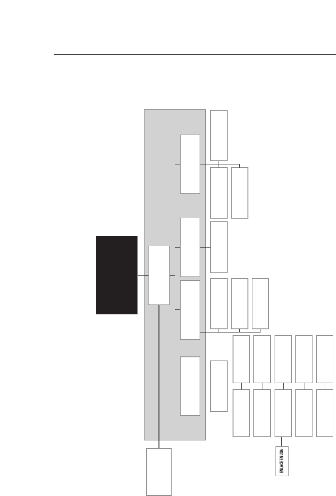

GUATEMALA
MEMORIA
DEL SILENCIO

Primera edición, junio de 1999
El contenido del Informe
Guatemala, memoria del silencio,
es responsabilidad únicamente de la
Comisión para el Esclarecimiento Histórico.
Esta publicación fue realizada
por la Oficina de Servicios para Proyectos
de las Naciones Unidas (UNOPS).
ISBN: 958-
DISEÑO: Servigráficos S.A.
Impreso en Guatemala
Esta obra puede ser reproducida total o parcialmente, por cualquier forma o medio,
sin consentimiento previo de UNOPS, siempre que se cite el crédito correspondiente.

PRÓLOGO 15
AGRADECIMIENTOS 19
MANDATO Y PROCEDIMIENTO
DE TRABAJO 23
I. Integración, instalación
y operación en general
23
Establecimiento de la CEH 23
Integración 27
Estatuto jurídico 27
Instalación 29
Régimen de trabajo y procedimiento
de los Comisionados 30
Financiación 30
Estructura y organización
de las operaciones 31
La Oficina de Apoyo a la CEH 31
Despliegue territorial 32
Repliegue y concentración
del personal en la sede central 34
Divulgación y convocatoria 35
Duración 41
Índice

II. El mandato 42
Fundamentos inspiradores 42
Finalidades 42
Funcionamiento 43
Interpretación y aplicación de aspectos
centrales del mandato de la Comisión 44
III. La colaboración de las Partes 48
Colaboración del Estado
en la instalación y el funcionamiento
de la CEH 49
Colaboración del Estado
con las investigaciones de la CEH 49
Colaboración de la URNG
con las investigaciones de la CEH 51
IV. La investigación de las violaciones
de derechos humanos
y hechos de violencia vinculados
con el enfrentamiento armado interno
51
Sustento principal 51
El esclarecimiento de los casos
de violaciones de derechos humanos
y hechos de violencia vinculados
con el enfrentamiento armado interno 58
La sistematización y análisis
de la información y la elaboración
del Informe final 64
La base de datos 66
Cifras sobre el total de víctimas 71

CAPÍTULO PRIMERO: CAUSAS
Y ORÍGENES DEL ENFRENTAMIENTO
ARMADO INTERNO
77
I. Introducción 77
II. Causas históricas 82
La estructura agraria
y la exclusión económica 83
El racismo, la subordinación
y la exclusión del indígena 86
La dictadura y el autoritarismo 94
III. Antecedentes inmediatos
(1944-1961)
97
La revolución de 1944 98
La reforma agraria 101
La campaña anticomunista 103
El derrocamiento de Arbenz
y la intervención militar de 1954 105
Institucionalización del anticomunismo 108
Inestabilidad política 113
Implementación de la Doctrina
de Seguridad Nacional 117
El levantamiento militar
del 13 de noviembre de 1960 122
IV. Orígenes del enfrentamiento
armado interno (1962-1970)
123
El inicio del enfrentamiento armado 124
Las jornadas de marzo y abril de 1962 125
Constitución y primeras acciones
de las Fuerzas Armadas Rebeldes (FAR) 128
El golpe de Estado
del 30 de marzo de 1963 130
Transición política condicionada:
las elecciones de 1966 134
El movimiento social y el nuevo
papel de la Iglesia Católica 137
Emergencia y expansión
de las fuerzas civiles paramilitares 142
Operaciones y derrota de las FAR 145
V. Reorganización de los actores
del enfrentamiento (1971-1978)
147
Los gobiernos militares de Arana Osorio
y Laugerud García 150
Crecimiento del movimiento social 158
El movimiento indígena 164
Reestructuración del movimiento insurgente 172
Relación de las organizaciones guerrilleras
con la población y la cuestión indígena 178
VI. Agudización de la violencia
y militarización del Estado
(1979-1985)
183
El Gobierno de Lucas García 184
La destrucción del movimiento social 187
La ofensiva guerrillera 191
El Gobierno de Ríos Montt: tierra arrasada
y segunda derrota de la guerrilla 193
El Gobierno de facto de Mejía Víctores 201
Resurgimiento del movimiento social 203
La nueva Constitución 205

VII. La transición política
(1986-1996)
209
El Gobierno de Cerezo Arévalo 211
El nuevo movimiento social 217
El Gobierno de Jorge Serrano Elías 221
El Gobierno de Ramiro de León Carpio 225
Finalización del enfrentamiento 227
APÉNDICES 229
Mapas 229
1. Mapa político de Guatemala 229
2. Mapa de exclusión social 230
3. Mapa de comunidades lingüísticas 231
Materiales de síntesis histórica 232
4. Períodos presidenciales 1900 a 1996 232
5. Cronología del período
del enfrentamiento armado interno 236
6. Decretos de excepción y amnistía 243
7. Guatemala: los actores
y el contexto internacional 1962-1996 257
8. Breve resumen cronológico
del proceso de paz 262
9. Composición étnica de Guatemala 267
10. Políticas de tratamiento jurídico
de los indígenas en Guatemala 268
Documentos históricos 269
11. Movimiento Revolucionario
13 de Noviembre: “Quiénes somos,
qué queremos y por qué luchamos”,
27 de febrero de 1962 269
12. Fuerzas Armadas Rebeldes:
“Proclama de las Fuerzas Armadas Rebeldes”,
30 de noviembre de 1963 272
13. Presidencia de la República:
“Pueblo de Guatemala defiende
tus libertades frente a la agresión
castrocomunista”, 15 de abril de 1962 277
14. Episcopado guatemalteco:
“Carta”, 24 de abril de 1962 279
15. Listado de organizaciones paramilitares
anticomunistas, 1962-1981 281
16. Consejo Anticomunista
de Guatemala (CADEG):
“Alerta Pueblo de Guatemala”,
24 de junio de 1967 282
17. Afiche “Yo acuso”,
24 de noviembre de 1966 284
18. Afiche “Mural Rojo”, enero de 1968 285
19. Texto del Pacto suscrito
entre el Ejército de Guatemala
y el Partido Revolucionario, 1966 286

Mientras consume su cuota de vida,
¿cuántas verdades elude el ser humano?
AUGUSTO MONTERROSO
Movimiento perpetuo
El silencio perdió su trayectoria
frente a una mano que abre
las puertas a la voz.
FRANCISCO MORALES SANTOS
Al pie de la letra
Que la historia que pasamos
quede en las escuelas,
para que no se olvide,
para que nuestros hijos la conozcan.
UN TESTIGO ANTE LA CEH
Dejen de hacer el mal, aprendan a hacer el
bien. Busquen la justicia, den sus derechos
al oprimido, hagan justicia al huérfano y
defiendan la viuda.
ISAÍAS 1,17

G
uatemala es un país de contrastes y contradicciones, situado en la
mitad del continente americano, bañado por las olas del mar Cari-
be y del Pacífico. Sus habitantes conviven en una Nación de carác-
ter multiétnico, pluricultural y multilingüe, dentro de un Estado emergi-
do del triunfo de las fuerzas liberales en Centroamérica. Guatemala ha te-
nido hermosas y dignas épocas desde el inicio de la cultura maya milena-
ria hasta nuestros tiempos; su nombre ha sido glorificado por su ciencia,
sus obras, su arte, su cultura, por hombres y mujeres ilustres y humildes,
honrados y de paz, por el Premio Nobel de Literatura y por el Premio No-
bel de la Paz. Sin embargo, en Guatemala se han escrito páginas de ver-
güenza e infamia, ignominia y de terror, de dolor y de llanto como pro-
ducto del enfrentamiento armado entre hermanos. Por más de 34 años, los
guatemaltecos vivieron bajo la sombra del miedo, la muerte y la desapari-
ción como amenazas cotidianas para el ciudadano común.
La Comisión para el Esclarecimiento Histórico (CEH) fue establecida
mediante el Acuerdo de Oslo, del 23 de junio de 1994, para esclarecer con
toda objetividad, equidad e imparcialidad las violaciones a los derechos hu-
manos y los hechos de violencia que han causado sufrimientos a la pobla-
ción guatemalteca, vinculados con el enfrentamiento armado. La Comi-
sión no fue instituida para juzgar, pues para esto deben funcionar los tri-
bunales de justicia, sino para esclarecer la historia de lo acontecido duran-
te más de tres décadas de guerra fratricida.
Cuando los Comisionados integramos la CEH, cada uno por diferen-
te camino y todos por azares de la vida, sabíamos en sus grandes líneas lo
que había sucedido. Los dos Comisionados guatemaltecos vivimos toda la
tragedia en suelo patrio y, en una u otra forma, la padecimos. Sin embar-
go, ninguno imaginó la dantesca magnitud de lo ocurrido.
Fue mandato de la Comisión dar respuesta a interrogantes que conti-
núan vigentes en estos tiempos de paz: ¿Por qué un sector de la población
recurrió a la violencia armada para alcanzar el poder político? ¿Qué expli-
ca los actos de violencia desmedida, de diverso signo e intensidad, cometi-
dos por ambas partes en el enfrentamiento armado? ¿Por qué la violencia,
Prólogo

especialmente la proveniente del Estado, afectó a la población civil, en par-
ticular al pueblo maya, cuyas mujeres fueron consideradas como botín de
guerra y soportaron todo el rigor de la violencia organizada? ¿Por qué la ni-
ñez indefensa sufrió los actos de salvajismo? ¿Por qué en nombre de Dios
se pretendió exterminar de la faz de la tierra a los hijos e hijas de Xmuka-
ne’, la abuela de la vida y de la creación natural? ¿Por qué esos actos, de
barbarie ultrajante, no respetaron las reglas más elementales del derecho
humanitario, la ética cristiana y los valores de la espiritualidad maya?
Hemos recibido miles de testimonios, hemos asistido con los sobrevi-
vientes a momentos tan emotivos como las exhumaciones de sus seres que-
ridos en los cementerios clandestinos; hemos escuchado a antiguos jefes de
Estado, altos mandos del Ejército y de la guerrilla; hemos leído miles de
páginas de documentos que nos han entregado muy diversas organizacio-
nes de la sociedad civil. El Informe de la Comisión atiende todas las ver-
siones y recoge lo que hemos oído, visto y leído sobre tantas atrocidades y
brutalidades.
El propósito principal del Informe es dejar constancia del reciente pa-
sado sangriento de Guatemala. Aunque muchos saben que el enfrenta-
miento armado causó muerte y destrucción, la gravedad de los reiterados
atropellos que sufrió el pueblo todavía no ha sido asumida por la concien-
cia nacional. Las masacres que eliminaron comunidades mayas enteras
pertenecen a la misma realidad que la persecución urbana de la oposición
política, de líderes sindicales, de sacerdotes y catequistas. No se trata ni de
alegatos pérfidos ni de fantasmas, sino de un capítulo auténtico de la his-
toria de Guatemala.
Los autores del Acuerdo de Oslo pensaban que, a pesar del choque que
puede sufrir la nación al mirarse en el espejo de su pasado, es necesario co-
nocer y hacer pública la verdad. Esperaban que la verdad condujera a la re-
conciliación, aún más, que hacer frente a la verdad es camino indispensa-
ble para conseguir este objetivo.
Es indudable que la verdad beneficia a todos, víctimas y victimarios.
Las víctimas, cuyo pasado ha sido degradado y manipulado, se verán dig-
nificadas; los victimarios, por otro lado, podrán recuperar la dignidad de
la cual ellos mismos se privaron, por el reconocimiento de sus actos inmo-
rales y criminales.
Conociendo la verdad de lo sucedido será más fácil alcanzar la recon-
ciliación nacional, para que los guatemaltecos podamos en el futuro vivir
en una auténtica democracia, sin olvidar que el imperio de la justicia ha si-
do y es el clamor generalizado como medio para crear un Estado nuevo.
Sin embargo, nadie hoy puede asegurar si el inmenso desafío de la re-
conciliación a través de la verdad puede ser enfrentado con éxito. Se re-
quiere sobre todo que los hechos históricos sean reconocidos y que se
16

aprenda la lección enseñada por el sufrimiento de la Nación. El futuro de
Guatemala depende en gran medida de las respuestas que el Estado y la so-
ciedad sepan dar a las tragedias vividas por casi todos los guatemaltecos en
carne propia.
La creencia errónea de que el fin justifica cualquier medio convirtió a
Guatemala en un país de muerte y tristeza. Se debe recordar, de una vez
por todas, que no existen valores que estén por encima de las vidas de los
seres humanos y, en consecuencia, sobre la existencia y el bienestar de to-
da una comunidad nacional. El Estado no existe por sí mismo, existe co-
mo instrumento de organización mediante el que un pueblo cuida sus in-
tereses fundamentales.
Miles son los muertos. Miles son los deudos. La reconciliación de
quienes quedamos no es posible sin justicia. Miguel Angel Asturias, nues-
tro Premio Nobel, lo dijo: “Los ojos de los enterrados se cerrarán juntos el día
de la justicia, o no los cerrarán”.
Con tristeza y dolor hemos cumplido la misión encomendada. Pone-
mos el Informe de la CEH esta memoria del silencio, en manos de los gua-
temaltecos, hombres y mujeres de ayer y hoy, para que las nuevas genera-
ciones conozcan las grandes calamidades y tragedias sufridas por este pue-
blo. Que las lecciones de este Informe sirvan para reflexionar, escuchar y
comprender al otro y para ser creativos en la paz.
CHRISTIAN TOMUSCHAT OTILIA LUX DE COTÍ ALFREDO BALSELLS TOJO
17

L
a Comisión para el Esclarecimiento Histórico quiere expresar su
mayor reconocimiento a todo el pueblo de Guatemala, a las víc-
timas de la violencia del pasado, a sus familiares, a los testigos, a
tantas personas que, por iniciativa personal y con el fin de contribuir a
la reconciliación nacional a través del esclarecimiento de la historia, han
acudido y confiado en la CEH. Sin ellos, sin su asistencia, respaldo y
confianza, nuestra delicada tarea difícilmente habría sido cumplida en
su totalidad. Su permanente apoyo nos ha motivado e inspirado.
Las dos Partes firmantes del Acuerdo de Oslo, el Gobierno de la
República de Guatemala y la Unidad Revolucionaria Nacional Guate-
malteca, crearon y facilitaron las condiciones, particularmente con la
contribución financiera del Gobierno, para que la
CEH
pudiera insta-
larse y llevar a cabo las acciones derivadas de su mandato. El Congre-
so de la República ha contribuido cuantas veces ha sido requerido a fa-
cilitar el adecuado funcionamiento de la
CEH
. El Organismo Judicial
respondió de forma positiva y nos tomó en debida cuenta.
Diversas organizaciones guatemaltecas de derechos humanos, ya
desde el período preparatorio de la instalación, realizaron contribucio-
nes extremadamente valiosas al trabajo de la
CEH
. En general, las or-
ganizaciones de la sociedad civil guatemaltecas, desde las de derechos
humanos, de víctimas, indígenas, de mujeres y de otros ámbitos de ac-
tividad hasta las empresariales o de profesionales de diferentes especia-
lidades, prestaron un apoyo permanente a la labor encomendada a es-
ta Comisión.
Los medios de comunicación nacionales e internacionales cum-
plieron ejemplarmente su función de información social, al haber se-
guido con la mayor atención y de forma respetuosa el trabajo de la
CEH
. Ello permitió a la sociedad guatemalteca estar al tanto en cada
momento del avance de las tareas de la Comisión y recibir cuantos lla-
mamientos o comunicados le fueron dirigidos.
Sin el respaldo político y moral, así como las contribuciones finan-
cieras de la comunidad internacional, la
CEH
no habría podido llevar
Agradecimientos

a cabo el complejo trabajo realizado. Los gobiernos de Alemania, Aus-
tria, Bélgica, Canadá, Dinamarca, Estados Unidos de América, Italia,
Japón, Noruega, Países Bajos, Reino Unido de Gran Bretaña, Suecia,
Suiza y la Unión Europea han aportado fondos que han permitido cu-
brir las necesidades presupuestarias. El Gobierno de los Estados Uni-
dos de América realizó un muy significativo esfuerzo de desclasifica-
ción de documentos. El Gobierno de Argentina también hizo gestio-
nes importantes en apoyo de la
CEH
. Una mención muy especial me-
rece la Embajada de Noruega en Guatemala, que en todo momento
estuvo atenta a las necesidades de la Comisión y tomó continuas ac-
ciones para que fueran atendidas.
La
CEH
expresa su más alto reconocimiento al Secretario General
de las Naciones Unidas, que, atendiendo la petición formulada por las
Partes en el Acuerdo de Oslo, llevó a cabo todas las gestiones necesa-
rias para preparar el buen funcionamiento de la Comisión y estableció
un mecanismo, a través del Departamento de Asuntos Políticos, en
virtud del cual la Oficina de Servicios para Proyectos de las Naciones
Unidas (UNOPS) ha implementado como proyecto la Oficina de
Apoyo de la
CEH
. La UNOPS mostró una extraordinaria capacidad y
flexibilidad en el manejo de tan complejo proyecto.
El Sistema de las Naciones Unidas realizó aportaciones de exper-
tos y material que completaron las necesidades financieras. La Secreta-
ría General de las Naciones Unidas, el Alto Comisionado de las Na-
ciones Unidas para los Refugiados (ACNUR), el Fondo de las Nacio-
nes Unidas para la Infancia (UNICEF), la UNOPS, el Programa de las
Naciones Unidas para el Desarrollo (PNUD) y el Tribunal Penal In-
ternacional para la ex Yugoslavia contribuyeron con expertos. La Mi-
sión de Verificación de las Naciones Unidas en Guatemala
(MINUGUA) apoyó logísticamente de manera muy significativa el
trabajo de la Comisión.
Las ONG internacionales prestaron asistencia ya desde la fase de
instalación al trabajo de la Comisión, ofreciéndole asesoría técnica, fa-
cilitándole directamente información, sirviendo de canal para la con-
secución de la misma, divulgando el trabajo de la Comisión y realizan-
do valiosísimas gestiones para la obtención de información de otros
gobiernos. La Asociación Americana para el Avance de las Ciencias y
el Centro para los Derechos Humanos Robert F. Kennedy, destinán-
dole sendos expertos; la Fundación Ford, con una contribución finan-
ciera, y la Fundación Soros-Guatemala, mediante el préstamo de vehí-
culos, han asistido significativamente a la
CEH
.
Los miembros de la
CEH
en absoluto habríamos podido cumplir
con nuestro mandato si no hubiéramos recibido la asistencia de todo
20

el personal que ha integrado la Oficina de Apoyo bajo la responsabili-
dad del Secretario Ejecutivo. Todo el personal, el Equipo Central, los
responsables de las numerosas oficinas regionales, los investigadores,
analistas, intérpretes, administradores y demás asistentes, guatemalte-
cos y de 31 nacionalidades más, nos apoyó con un admirable compro-
miso y generosa dedicación, trabajando en condiciones muy a menu-
do difíciles y bajo permanente presión.
A todos: ¡Muchísimas gracias!
21

I. INTEGRACIÓN, INSTALACIÓN
Y OPERACIÓN EN GENERAL
Establecimiento de la CEH
1.
La Comisión para el Esclarecimiento Histórico de las Violaciones a los
Derechos Humanos y los Hechos de Violencia que han Causado Sufri-
mientos a la Población Guatemalteca fue establecida en el marco del pro-
ceso de paz de Guatemala mediante el Acuerdo firmado en Oslo (Norue-
ga) el 23 de junio de 1994. En dicho Acuerdo se establecen el mandato y
otros elementos de integración y funcionamiento de la CEH. El conteni-
do del Acuerdo es el siguiente:
“ACUERDO SOBRE EL ESTABLECIMIENTO DE LA COMISIÓN
PARA EL ESCLARECIMIENTO HISTÓRICO DE LAS
VIOLACIONES A LOS DERECHOS HUMANOS Y LOS HECHOS
DE VIOLENCIA QUE HAN CAUSADO SUFRIMIENTOS A LA
POBLACIÓN GUATEMALTECA
Considerando que la historia contemporánea de nuestra patria regis-
tra graves hechos de violencia, de irrespeto de los derechos fundamentales
de la persona y sufrimientos de la población vinculados con el enfrenta-
miento armado;
Considerando el derecho del pueblo de Guatemala a conocer plena-
mente la verdad sobre estos acontecimientos cuyo esclarecimiento contri-
buirá a que no se repitan estas páginas tristes y dolorosas y que se fortalez-
ca el proceso de democratización en el país;
Reiterando su voluntad de cumplir cabalmente con el Acuerdo Global
sobre Derechos Humanos del 29 de marzo de 1994;
Reiterando su voluntad de iniciar a la brevedad un nuevo capítulo en
la historia nacional que como culminación de un amplio proceso de nego-
ciación ponga fin al enfrentamiento armado, contribuyendo a sentar las
Mandato y procedimiento
de trabajo

bases para una convivencia pacífica y respetuosa de los derechos humanos
entre los guatemaltecos;
Considerando, en este contexto, la necesidad de promover una cultu-
ra de concordia y respeto mutuo que elimine toda forma de revancha o
venganza, una condición indispensable para una paz firme y duradera;
El Gobierno de Guatemala y la Unidad Revolucionaria Nacional Gua-
temalteca (en adelante “las Partes”) acuerdan lo siguiente:
El establecimiento de una Comisión con las siguientes caracterís-
ticas:
FINALIDADES:
I. Esclarecer con toda objetividad, equidad e imparcialidad las violaciones a
los derechos humanos y los hechos de violencia que han causado sufrimien-
tos a la población guatemalteca, vinculados con el enfrentamiento armado.
II. Elaborar un informe que contenga los resultados de las investigaciones
realizadas y ofrezca elementos objetivos de juicio sobre lo acontecido du-
rante este período abarcando a todos los factores, internos y externos.
III. Formular recomendaciones específicas encaminadas a favorecer la paz
y la concordia nacional en Guatemala. La Comisión recomendará, en par-
ticular, medidas para preservar la memoria de las víctimas, para fomentar
una cultura de respeto mutuo y observancia de los derechos humanos y pa-
ra fortalecer el proceso democrático.
PERÍODO:
El período que investigará la Comisión será a partir del inicio del en-
frentamiento armado hasta que se suscriba el Acuerdo de Paz Firme y Du-
radera.
FUNCIONAMIENTO:
I. La Comisión recibirá antecedentes e información que proporcionen las
personas o instituciones que se consideren afectadas así, como las Partes.
II. Corresponde a la Comisión aclarar plenamente y en detalle estas situa-
ciones. En particular, analizará con toda imparcialidad los factores y cir-
cunstancias que incidieron en dichos casos. La Comisión invitará a todos
los que puedan estar en posesión de información pertinente a que presen-
ten su versión de los hechos. La no comparecencia de los interesados no
impedirá que la Comisión se pronuncie sobre los casos.
III. Los trabajos, recomendaciones e informe de la Comisión no individua-
lizarán responsabilidades, ni tendrán propósitos o efectos judiciales.
IV. Las actuaciones de la Comisión serán reservadas para garantizar la secre-
tividad de las fuentes, así como la seguridad de los testigos e informantes.
V. Al estar constituida, la Comisión hará pública su constitución y sede,
24

por todos los medios posibles, e invitará a los interesados a que depositen
su información y testimonios.
INTEGRACIÓN:
La Comisión contará con tres miembros, estos serán:
I. El actual moderador de las negociaciones de paz, cuya designación se so-
licitará al Secretario General de las Naciones Unidas;
II. Un miembro, ciudadano de conducta irreprochable, designado por el
moderador, de común acuerdo con las Partes;
III. Un académico elegido por el moderador, de común acuerdo con las
Partes, de una terna propuesta por los rectores universitarios.
La Comisión contará con el personal de apoyo que considere necesa-
rio, con las cualidades requeridas, para el cumplimiento de sus funciones.
INSTALACIÓN Y DURACIÓN:
La Comisión se integrará, instalará y empezará a funcionar a partir del
día de la firma del Acuerdo de Paz Firme y Duradera. Los trabajos de la
Comisión durarán un período de seis meses contados a partir de su insta-
lación, prorrogables por seis meses más, si así lo decide la Comisión.
INFORME:
La Comisión redactará un informe que será entregado a las Partes y al
Secretario General de las Naciones Unidas, que lo hará público. El hecho
que no se haya podido investigar todos los casos o situaciones presentados
a la Comisión no restará validez al informe.
COMPROMISO DE LAS PARTES:
Las Partes se comprometen a colaborar con la Comisión en todo lo
que fuera necesario para el cumplimiento de su mandato. Se comprome-
ten, en particular, a crear previa la integración de la Comisión y durante
su funcionamiento las condiciones indispensables para que la misma pue-
da llenar las características establecidas en el presente Acuerdo.
VERIFICACIÓN INTERNACIONAL:
De conformidad con el Acuerdo Marco del 10 de enero de 1994, el
cumplimiento del presente Acuerdo está sujeto a verificación internacional
por las Naciones Unidas.
MEDIDAS DE EJECUCIÓN INMEDIATA DESPUÉS DE
LA FIRMA DEL PRESENTE ACUERDO:
Las Partes acuerdan solicitar al Secretario General el nombramiento a
la brevedad del moderador de las negociaciones para ser miembro de la
25

Comisión. Después de su nombramiento, este último será facultado para
hacer desde ya todas las gestiones necesarias para preparar el buen funcio-
namiento de la Comisión una vez integrada e instalada de conformidad
con las disposiciones de este Acuerdo.
Oslo, 23 de junio de 1994
Por el Gobierno de la República de Guatemala
Héctor Rosada Granados
Antonio Arenales Forno
Mario Permuth
Amílcar Burgos Solís
General Carlos Enrique Pineda Carranza
General Julio Arnoldo Balconi Turcios
General José Horacio Soto Salán
Por la Unidad Revolucionaria Nacional Guatemalteca
Comandancia General
Carlos González
Comandante Rolando Morán
Comandante Gaspar Ilom
Comandante Pablo Monsanto
Comisión Político-Diplomática
Luis Felipe Becker Guzmán
Francisco Villagrán Muñoz
Miguel Ángel Sandoval
Luz Méndez Gutiérrez
Asesores
Mario Vinicio Castañeda
Miguel Ángel Reyes
Jorge Rosal
Por las Naciones Unidas
Jean Arnault
Moderador”.
2.
Después de firmado el Acuerdo, el Secretario General de las Naciones
Unidas tomó las acciones necesarias para preparar el buen funcionamien-
to de la Comisión, cuya integración y puesta en marcha quedó pendiente
26

de la firma del Acuerdo de Paz Firme y Duradera, que tuvo lugar el 29 de
diciembre de 1996.
Integración
3.
Una vez firmado el Acuerdo de Paz Firme y Duradera, el Secretario Ge-
neral de las Naciones Unidas, atendiendo la solicitud hecha a él en el
Acuerdo de Oslo, puso en marcha el procedimiento de designación de los
tres miembros de la CEH, nombrando al primero de ellos.
4.
Según el Acuerdo de Oslo, el primer miembro había de ser “El actual
moderador de las negociaciones de paz, cuya designación se solicitará al Secre-
tario General de las Naciones Unidas”. En cuanto que el 31 de enero de
1997 había designado al entonces moderador de las negociaciones de paz,
el Sr. Jean Arnault, como su Representante Especial en Guatemala, el Se-
cretario General, de común acuerdo con las Partes, designó el 7 de febre-
ro de 1997 al profesor Christian Tomuschat, antiguo experto independien-
te para Guatemala de la Comisión de Derechos Humanos de las Naciones
Unidas, como miembro de la CEH.
5.
Entre el 19 y el 21 de febrero de 1997, el Prof. Tomuschat mantuvo
numerosas reuniones con las Partes y con representantes de un amplio es-
pectro de la sociedad civil. Fruto de las mismas, y de común acuerdo con
las Partes, el 22 de febrero designó a la licenciada Otilia Lux de Cotí y al
licenciado Alfredo Balsells Tojo, este último elegido de entre una terna pro-
puesta por los rectores universitarios, como los otros dos miembros.
6.
La Secretaría General de las Naciones Unidas, a través del Departamen-
to de Asuntos Políticos, designó el 13 de febrero de 1997 a un funciona-
rio de la Organización, el Sr. Fernando Castañón, para prestar asistencia a
los miembros de la CEH en la preparación de la instalación y buen fun-
cionamiento de la Comisión.
Estatuto jurídico
7.
Para garantizar la objetividad, equidad e imparcialidad en el trabajo de
la CEH, condiciones que imperativamente debían ser aseguradas, resulta-
ba necesario darle un estatuto jurídico que le permitiera cumplir con su
mandato libre de presiones o acciones que pudieran perturbar su indepen-
dencia.
8.
Con ese propósito, las Naciones Unidas, mediante carta de fecha 12 de
diciembre de 1997 del Representante Especial del Secretario General en
Guatemala, propusieron al Gobierno “que las inmunidades establecidas en
27

la Sección 22 (a), (b) y (c) de la Convención sobre las Prerrogativas e Inmu-
nidades de las Naciones Unidas, a la que su Gobierno se adhirió el 7 de ju-
lio de 1947, sean aplicables en su calidad de peritos a efecto de la Conven-
ción, a los tres miembros de la Comisión y a su personal de apoyo, cuyos nom-
bres y cargos se comunicarán al Gobierno de Guatemala, independientemen-
te de su nacionalidad y condiciones de residencia, sin perjuicio de aquellas
otras prerrogativas e inmunidades que según sus categorías y tipo de designa-
ción les puedan corresponder bajo la citada Convención.
En todo caso la aplicación de la Convención sobre Prerrogativas e Inmu-
nidades de las Naciones Unidas al personal guatemalteco estará limitada a
lo dispuesto en los literales (a), (b) y (c) de la Sección 22 de la misma”.
9.
El 17 de diciembre de 1997 el Ministro de Relaciones Exteriores de
Guatemala respondió a la propuesta, aceptando sus términos y remitiendo
al Congreso de la República el mencionado intercambio de cartas para su
aprobación a los efectos constitucionalmente oportunos.
10.
El Congreso de la República, mediante su Decreto número 21-98,
del 25 de marzo de 1998, estableció en su Artículo 1 que “se aprueba el
Acuerdo entre las Naciones Unidas y el Gobierno de Guatemala, relativo a
Inmunidades y Prerrogativas para los Miembros de la Comisión para el Es-
clarecimiento Histórico y Personal de Apoyo, suscrito mediante Canje de
Notas.”
11.
La Convención sobre las Prerrogativas e Inmunidades de las Nacio-
nes Unidas establece en su Artículo VI, sección 22 que los peritos de las
Naciones Unidas, entre otras prerrogativas e inmunidades para el ejercicio
independiente de sus funciones, “...gozarán de:
a) inmunidad contra arresto y detención y contra el embargo de su equi-
paje personal;
b) inmunidad contra toda acción judicial respecto a palabras habladas o
escritas y a sus actos en el cumplimiento de su misión; esta inmunidad
contra toda acción judicial continuará aunque las personas interesadas
hayan cesado ya de trabajar en misiones para las Naciones Unidas;
c) inviolabilidad de todo papel y documento...”
12.
La Sección 23 de la Convención establece que: “...El Secretario Gene-
ral tendrá el derecho y el deber de renunciar a la inmunidad de cualquier pe-
rito, en cualquier caso en que a su juicio la inmunidad impida el curso de la
justicia y pueda renunciarse a ella sin que se perjudiquen los intereses de las
Naciones Unidas.”
28

Instalación
13.
Una vez integrada la CEH, sus miembros, con la asistencia de las Na-
ciones Unidas, llevaron a cabo todas las acciones necesarias para preparar
finalmente su funcionamiento e instalarla de manera que pudiera iniciar
formalmente el período de sus trabajos. Inicialmente, la CEH no dispuso
de recursos financieros ni de infraestructura logística adecuada para cum-
plir con su mandato.
14.
Los Comisionados mantuvieron reuniones con las Partes y represen-
tantes de la sociedad civil, especialmente con organizaciones de derechos
humanos, de víctimas e indígenas, lo que permitió escuchar sugerencias y
propuestas sobre el procedimiento de trabajo que debía seguir la CEH en
cumplimiento de su mandato. Se tomó en cuenta también el procedimien-
to de trabajo seguido por otras comisiones y la experiencia acumulada por
las Naciones Unidas.
15.
En cuanto a la organización del personal de apoyo, también se estu-
dió la mejor fórmula, a cuyo efecto el Departamento de Asuntos Políticos
de las Naciones Unidas (DPA), siguiendo instrucciones del Secretario Ge-
neral, concordó el 7 de mayo de 1997 un mecanismo interno en cuya vir-
tud la Oficina de Servicios para Proyectos de las Naciones Unidas
(UNOPS) podía concluir un acuerdo con la CEH para la ejecución como
proyecto de su Oficina de Apoyo.
16.
De conformidad con el mecanismo establecido por el DPA, el 19 de
mayo de 1997 la CEH firmó una carta de entendimiento con la UNOPS,
designándola gerente de fondos y encargada de las operaciones de la Ofi-
cina de Apoyo, que ha funcionado como un proyecto de las Naciones Uni-
das, a través de la Unidad en Guatemala de la UNOPS, que es parte de la
División de Rehabilitación y Sostenibilidad Social. Su gestión, con alta fle-
xibilidad y eficiencia, ha permitido manejar adecuadamente esta compleja
operación.
17.
El 19 de mayo de 1997 los Comisionados aprobaron el presupuesto
de la CEH, que reflejaba su necesidad financiera, que, con algunos incre-
mentos posteriores debidos a la prolongación de sus actividades, incluidos
los gastos de publicación del Informe, ha alcanzado la cifra de 9,796.167
dólares estadounidenses.
18.
Durante la fase preparatoria de la instalación también se llevaron a ca-
bo actividades de suma importancia como la selección del personal nacio-
nal e internacional que integraría la Oficina de Apoyo, particularmente los
investigadores, la capacitación especializada de dicho personal, la elabora-
29

ción del método de trabajo, la búsqueda y adecuación de instalaciones pa-
ra sus oficinas del terreno y la organización del despliegue territorial a que
se hace referencia más adelante.
19.
La CEH fue instalada formalmente e inició el período de sus trabajos
el 31 de julio de 1997.
Régimen de trabajo y procedimiento de los Comisionados
20.
Los tres miembros de la Comisión adoptaron en junio de 1997 el
Reglamento Interno de los Comisionados, en el que se establecen los
procedimientos de trabajo interno entre ellos, los mecanismos de adop-
ción de decisiones, régimen de reuniones y otros aspectos procedimen-
tales.
Financiación
21.
Una vez aprobado su presupuesto de gastos necesarios el 19 de ma-
yo de 1997, el día siguiente la CEH hizo un llamamiento formal al Go-
bierno de Guatemala y a la comunidad internacional para que hicieran
contribuciones financieras a la CEH. La respuesta de todos ellos fue ex-
tremadamente positiva y permitió que en un período de tiempo muy
corto se pudieran cubrir las necesidades financieras de la operación.
22.
Los gobiernos de Guatemala, Alemania, Austria, Bélgica, Canadá, Di-
namarca, Estados Unidos de América, Italia, Japón, Noruega, Países Bajos,
Reino Unido de Gran Bretaña, Suecia, Suiza y la Unión Europea aporta-
ron fondos que han permitido cubrir las necesidades presupuestarias.
23.
El Sistema de las Naciones Unidas realizó aportaciones de expertos
y material que completaron las necesidades financieras. La Secretaría Ge-
neral de las Naciones Unidas, el Alto Comisionado de las Naciones Uni-
das para los Refugiados (ACNUR), el Fondo de las Naciones Unidas pa-
ra la Infancia (UNICEF), la UNOPS, el Programa de las Naciones Uni-
das para el Desarrollo (PNUD) y el Tribunal Penal Internacional para la
ex Yugoslavia contribuyeron con expertos. La Misión de Verificación de
las Naciones Unidas en Guatemala (MINUGUA) apoyó logísticamente
de manera muy significativa el trabajo de la Comisión.
24.
La Asociación Americana para el Avance de las Ciencias y el Centro
para los Derechos Humanos Robert F. Kennedy, destinándole sendos ex-
pertos, la Fundación Ford, con una contribución financiera, y la Funda-
ción Soros-Guatemala, mediante el préstamo de vehículos, también han
realizado contribuciones materiales a la CEH.
30

Estructura y organización de las operaciones
25.
Para llevar a cabo las actividades necesarias para cumplir con su man-
dato, la Comisión contó con una Oficina de Apoyo, que funcionó bajo el
enfoque de proyecto.
La Oficina de Apoyo a la CEH
26.
A partir del mes de febrero de 1997, el Departamento de Asuntos Po-
líticos de las Naciones Unidas, recogiendo una solicitud de los Comisiona-
dos, asesoró a la Comisión en la búsqueda del mecanismo más oportuno
de ejecución.
27.
Bajo la supervisión del Secretario Ejecutivo de la Comisión, la
Oficina de Apoyo realizó sus actividades conducida por un Equipo
Central, conformado por el mismo Secretario Ejecutivo, el Coordina-
dor del Informe, el Director de Investigaciones y el Responsable de
Operaciones. Un total de 273 profesionales, personal de apoyo y de se-
guridad han colaborado con la CEH; entre ellos 142 guatemaltecos y
131 de otras 31 nacionalidades (Alemania, Argentina, Bosnia Herzego-
vina, Brasil, Cabo Verde, Canadá, Chile, Colombia, Costa Rica, Ecua-
dor, El Salvador, España, Estados Unidos de América, Francia, Gran
Bretaña, Haití, Honduras, Irlanda, Islandia, Italia, México, Nicaragua,
Noruega, Países Bajos, Perú, Portugal, Puerto Rico, Suiza, Ucrania,
Uruguay y Venezuela).
28.
En la sede central la estructura se organizó en torno a tres principales
áreas de actividad a cargo del Coordinador del Informe Final, el Director
de Investigaciones y el Jefe de Operaciones, cargos todos ellos que integra-
ron el Equipo Central.
29.
Bajo la supervisión inmediata del Secretario Ejecutivo operó la Uni-
dad de Información Pública, integrada por una sola persona durante todo
el período de trabajo de la CEH. Los tres Comisionados y el Secretario
Ejecutivo fueron los únicos autorizados para hacer declaraciones públicas
a los medios de comunicación, si bien el Coordinador de la CEH fue de-
signado como portavoz principal.
30.
La segunda unidad funcional fue el Centro de Documentación, que
sistematizó toda la documentación de base y aquella de carácter genéri-
co que fueron produciendo los investigadores. El Grupo de Análisis His-
tórico, integrado por destacados investigadores y académicos, todos de
nacionalidad guatemalteca, llevó a cabo estudios sobre la historia recien-
te de Guatemala, sus causas y los factores que intervinieron en los acon-
31

tecimientos, plasmándolo en documentos que fueron utilizados directa-
mente por los Comisionados y los equipos temáticos.
31.
El Director de Investigaciones organizó y supervisó el trabajo de los
investigadores y de la Base de Datos, cuya actividad se describe más ade-
lante, y del Equipo Especial. Este último tuvo como tarea la recopilación
y análisis de información proveniente de las partes militares, documen-
tación desclasificada del Gobierno de los Estados Unidos de América y
otros insumos especializados, teniendo como tarea el análisis de los as-
pectos militares del enfrentamiento armado y su adecuación al derecho
internacional humanitario, relacionándolo con el respeto del derecho a
los derechos humanos en aquellos aspectos vinculados con el enfrenta-
miento armado.
32.
El Jefe de Operaciones supervisó directamente la unidad adminis-
trativa, integrada por cinco personas, y la oficina de seguridad, cuya ta-
rea fue dar protección a las personas de los Comisionados, estar pen-
diente de la seguridad del personal asignado a las diversas oficinas y ase-
gurar la protección de los archivos y demás información de carácter con-
fidencial.
Despliegue territorial
33.
Desde su instalación la Comisión decidió organizar la Oficina de
Apoyo de manera que fuera posible para la mayoría de los ciudadanos gua-
temaltecos tener fácil acceso a ella para brindar testimonios voluntarios.
Por esta razón se optó por un esquema de despliegue territorial que permi-
tiera la presencia de la Comisión en el interior del país. De esta forma, con
base en las oficinas abiertas en el interior del país, y la permanente movili-
dad de sus equipos, los investigadores de la CEH pudieron cubrir la tota-
lidad del territorio nacional. Al decidir la ubicación de las oficinas, se prio-
rizaron especialmente las áreas más afectadas por las violaciones a los dere-
chos humanos y los hechos de violencia derivados del enfrentamiento ar-
mado interno y, por otra parte, las áreas más difícilmente comunicadas del
país. Con base en estas consideraciones se abrieron más oficinas en el Oc-
cidente del país.
34.
El 1 de septiembre de 1997 la Comisión inició su trabajo territorial
descentralizada en 4 subsedes —Ciudad de Guatemala, Cobán, Santa
Cruz del Quiché y Huehuetenango— y en 10 oficinas regionales, deno-
minadas oficinas de enlace —Barillas, Cantabal, Escuintla, Nebaj, Poptún,
Quetzaltenango, San Marcos, Santa Elena, Sololá y Zacapa. Desde estas
32
oficinas los investigadores de la CEH se desplazaron a los municipios y las
comunidades de todos los departamentos del país, de acuerdo a la distri-
bución detallada en el siguiente cuadro:
35.
Las oficinas de campo llevaron a cabo visitas a las cabeceras munici-
pales con el fin de informar a la población —en forma directa o a través
de ONG, de las autoridades locales formales y de las autoridades tradicio-
nales— sobre el mandato de la CEH. Como resultado de dichas visitas, de
la campaña de información pública y de la colaboración de diversas orga-
nizaciones de la sociedad civil, miles de ciudadanos se acercaron a las ofi-
cinas de la Comisión, solicitando una visita en su comunidad o prestando
directamente testimonio en las oficinas de la CEH.
36.
Desde septiembre de 1997 hasta abril de 1998 —y en algunos casos
hasta el mes de mayo— los investigadores de la CEH visitaron cerca de
2,000 comunidades —la mayoría en más de una oportunidad y algunas
hasta más de diez veces— recogiendo cerca de 500 testimonios colectivos,
registrando 7,338 testimonios.
1
La Comisión interactuó directamente con
más de 20,000 personas, quienes colaboraron con sus investigaciones pro-
porcionando información. Entre ellas más de 1,000 fueron testigos clave:
Oficina Departamentos cubiertos
Barillas Norte de Huehuetenango
Cantabal Ixcán (Norte de El Quiché)
Ciudad de Guatemala Chimaltenango; Guatemala; Jalapa; Sacatepéquez
Cobán Alta Verapaz; Baja Verapaz
Escuintla Escuintla; Jutiapa; Santa Rosa; Suchitepéquez
Huehuetenango Sur de Huehuetenango
Nebaj Ixil (Dep. de El Quiché)
Poptún Sur del Petén
Quetzaltenango Quetzaltenango; Retalhuleu; Totonicapán
San Marcos San Marcos
Santa Cruz Centro y Sur de El Quiché
Santa Elena Norte del Petén
Sololá Sololá
Zacapa Chiquimula; El Progreso; Izabal; Zacapa
33
1 Incluye el total de declaraciones individuales y colectivas presentadas a la CEH.

miembros y ex miembros del Ejército Nacional y de otras entidades del Es-
tado, de las Patrullas de Autodefensa Civil, comisionados militares, ex
combatientes pertenecientes a organizaciones guerrilleras, políticos, líderes
sindicales y de organizaciones de la sociedad civil, intelectuales, etc.
37.
Además la Comisión recogió testimonios en Canadá, Estados Unidos
de América, México y en algunos países europeos. Salvo en el caso de Mé-
xico, en el resto de los países esa recepción de testimonios se llevó a cabo a
través de ONG que ofrecieron generosamente su apoyo.
38.
La investigación de los casos admitidos por la Comisión también se
llevó a cabo tanto desde las oficinas del terreno como desde la sede central
en la capital. Una vez cerradas las oficinas de campo el 15 de abril de 1998,
las investigaciones se realizaron desde la sede central, por medio de equi-
pos móviles que se desplazaron al interior del país.
Repliegue y concentración del personal en la sede central
39.
Una vez finalizado el trabajo de campo en las catorce oficinas territo-
riales, el personal de la Comisión se concentró en la sede central, con la na-
tural reducción de sus efectivos al concluir el período principal de recep-
ción de testimonios, aunque se siguió atendiendo hasta el 31 de julio de
1998 a aquellos testigos e informantes que por su iniciativa quisieron ha-
cer aportaciones al mandato de la Comisión.
40.
A partir de esa fecha, la Oficina de Apoyo se reestructuró en tres áreas
—de Sistematización de Insumos, Temática y de Recomendaciones— y
una sección de operaciones, manteniendo siempre el Equipo Central con
su tarea y funcionamiento inicial y la Unidad de Información Pública.
41.
El Área de Sistematización de Insumos integró los equipos de casos
ilustrativos, casos presentados, base de datos, centro de documentación,
equipo de contexto e historia, equipo de testigos clave, equipo especial,
equipo de administración de justicia, equipo sobre documentos de otros
gobiernos, con un enlace en Washington, y la asesoría jurídica.
42.
El Área Temática integró tres equipos que, respectivamente, trataron
las causas y orígenes del enfrentamiento armado interno, las estrategias y
mecanismos de la violencia y las consecuencias y efectos de la violencia.
43.
El Área de Recomendaciones estuvo integrada por un único equipo
de recomendaciones.
44.
A partir del 17 de agosto de 1998 los anteriores equipos de la sede se
fueron reduciendo progresivamente a medida que progresaban los trabajos
de la CEH.
34

45.
A partir del 15 de noviembre, y según se redujeron los equipos, se
creó la sección de coherencia, en la que se integraron el equipo de cohe-
rencia, el equipo de revisión de texto y el equipo de edición de texto. Ya
en la última fase se creó el equipo organizador del acto de entrega del In-
forme y el equipo de impresión y publicación, operando la Oficina de
Apoyo hasta el día 25 de febrero de 1999, fecha de entrega del Informe.
46.
Los organigramas de la estructura de la Oficina de Apoyo de la CEH,
y su evolución de conformidad con las tareas de cada momento, se encuen-
tran entre las páginas 36 y 40.
Divulgación y convocatoria
47.
Según el Acuerdo de Oslo, la Comisión debía invitar a todos los
que pudieran estar en posesión de información pertinente a que presen-
taran su versión de los hechos. Dicha invitación debía ir precedida y
acompañada por el anuncio público de que la CEH ya había iniciado el
período de sus trabajos y de los lugares a donde cualquier ciudadano
que lo deseara podía acudir a presentar su testimonio o aportar infor-
mación.
48.
Con ese objetivo, la CEH desarrolló una campaña de información
pública, que se inició con motivo del acto público de instalación y comien-
zo formal de sus trabajos. Dicha campaña se desarrolló fundamentalmen-
te en prensa y radio, aunque también se emplearon profusamente medios
alternativos de comunicación.
49.
A lo largo de los dieciocho meses de funcionamiento de la CEH, se
publicaron catorce anuncios en diarios y revistas de circulación nacional,
periódicos semanales regionales, en el Occidente del país, así como en
una revista centroamericana. Cada uno de estos avisos fue publicado por
lo menos dos veces en cada medio. En radio se produjeron, en nueve
idiomas mayas y español, doce cuñas y seis microprogramas, que fueron
transmitidos a través de ciento cuarenta y dos radio emisoras, ciento do-
ce de cobertura nacional y el resto de cobertura local o municipal. Tan-
to las cuñas como los microprogramas abordaban temas distintos, que
iban desde la convocatoria a comparecer a las oficinas de la CEH a pre-
sentar testimonios o información hasta la explicación de la importancia
del esclarecimiento histórico, pasando por la garantía de confidenciali-
dad de las fuentes e informantes, y la necesidad de abandonar el miedo
y el silencio. Una cuña y un microprograma, por lo menos, estuvieron
dirigidos a los victimarios.
35
36
Equipo Central
Grupo de Análisis
Histórico
Centro de
Documentación
Base de
Datos
Equipo
Especial
Oficina de
Seguridad
Unidad
Administrativa
Asistente de
Operaciones
RESPONSABLE
DE OPERACIONES
DIRECTOR
DE INVESTIGACIONES
SECRETARIO
EJECUTIVO
COORDINADOR
DE INFORME FINAL
Subsede Huehuetenango
OE Barillas
OE Quetzaltenango
OE San Marcos
Equipo Móvil
OE Zacapa
OE Escuintla
Equipo Móvil
Subsede Guatemala
OE Flores
OE Poptún
OE Cantabal
Subsede Cobán
Equipo Móvil Quiché
OE Sololá
OE Nebaj
Subsede Quiché
COMISIONADOS
Christian Tomuschat, Coordinador
Otilia Lux de Cotí
Edgar Alfredo Balsells Tojo
Período 31 de julio de 1997 al 31 de marzo de 1998
COMISI
Ó
N PARA EL ESCLARECIMIENTO HIST
Ó
RICO
ORGANIGRAMA
Equipo Móvi
l
Cobán
OE: Oficina de Enlace

37
UNIDAD DE INFORMACIÓN
PÚBLICA
OPERACIONES
EQUIPO CENTRAL
ÁREA DE RECOMENDACIONESÁREA TEMÁTICA
ÁREA DE SISTEMATIZACIÓN
DE INSUMOS
SECRETARIO
EJECUTIVO
DIRECTORA DE INVESTIGACIONES
ADJUNTA
EQUIPO DE CONTEXTO
E HISTORIA
EQUIPO ESPECIAL
EQUIPO DOCUMENTOS
OTROS GOBIERNOS
BASE DE DATOS
EQUIPO DE CASOS
ILUSTRATIVOS
ASESORIA JURÍDICA
ESPECÍFICA
EQUIPO ADMINISTRACIÓN
DE JUSTICIA
CENTRO DE DOCUMENTACIÓN
EQUIPO DE CASOS
ORDINARIOS
CONSECUENCIAS Y EFECTOS
DE LA VIOLENCIA
ESTRATEGIAS Y MECANISMOS
DE LA VIOLENCIA
CAUSAS Y ORÍGENES
DEL ENFRENTAMIENTO ARMADO
EQUIPO DE RECOMENDACIONES
UNIDAD AD
M
INISTRATIVA
ASISTENTE DE OPERACIONES OFICINA DE SEGURIDAD
COMISIONADOS
Christian Tomuschat, Coordinador
Otilia Lux de Cotí
Edgar Alfredo Balsells Tojo
COMISI
Ó
N PARA EL ESCLARECIMIENTO HIST
Ó
RICO
ORGANIGRAMA
Período 1 de abril al 30 de julio de 1998
CLAVE
EQUIPO PARA TESTIGOS
38
COMISI
Ó
N PARA EL ESCLARECIMIENTO HIST
Ó
RICO
ORGANIGRAMA
Período 1 de agosto al 14 de noviembre de 1998
ENLACE EN USA
EQUIPO MÓVIL
EQUIPO CENTRAL
UNIDAD DE INFORMACIÓN
PÚBLICA
CAUSAS Y ORÍGENES
DEL ENFRENTAMIENTO ARMADO
CONSECUENCIAS Y EFECTOS
DE LA VIOLENCIA
ESTRATEGIAS Y MECANISMOS
DE LA VIOLENCIA
EQUIPO DOCUMENTOS
OTROS GOBIERNOS
BASE DE DATOS
EQUIPO DE CASOS
ILUSTRATIVOS
EQUIPO DE CASOS
ORDINARIOS
CENTRO DE
DOCUMENTACIÓN
ASESORÍA JURÍDICA
ESPECÍFICA
DIRECTORA DE INVESTIGACIONES
ADJUNTA
EQUIPO DE RECOMENDACIONES
ÁREA DE RECOMENDACIONES
SECRETARIO
EJECUTIVO
AUNIDAD ADMINISTRATIV OFICINA DE SEGURIDAD
ASISTENTE DE OPERACIONES
OPERACIONESÁREA DE INSUMOS Y TEMÁTICA
COMISIONADOS
Christian Tomuschat, Coordinador
Otilia Lux de Cotí
Edgar Alfredo Balsells Toj
o
39
COMISI
Ó
N PARA EL ESCLARECIMIENTO HIST
Ó
RICO
ORGANIGRAMA
Período 15 de noviembre al 31 de diciembre de 1998
COMISIONADOS
Christian Tomuschat, Coordinador
Otilia Lux de Cotí
Edgar Alfredo Balsells Tojo
REVISOR
DE ESTILO
INFORMACIÓN
PÚBLICA
EQUIPO CENTRA
L
BASE DE DATOS
EQUIPO DE CASOS
ILUSTRATIVOS
EQUIPO DE CASOS
ORDINARIOS
CENTRO DE
DOCUMENTACIÓN
EQUIPO DE EDICIÓN
DE TEXTO
UNIDAD
ADMINISTRATIVA
OFICINA
DE SEGURIDAD
EQUIPO DE COHERENCIA ASISTENTE DE OPERACIONES
DIRECTORA DE INVESTIGACIONES
ADJUNTA
OPERACIONESSECCIÓN DE COHERENCIA
ÁREA DE INSUMOS
Y TEMÁTICA
SECRETARIO
EJECUTIVO
40
COMISI
Ó
N PARA EL ESCLARECIMIENTO HIST
Ó
RICO
ORGANIGRAMA
Período 1 de enero al 24 de febrero de 1999
EQUIPO DE COHERENCIA
DIRECTORA DE INVESTIGACIONES
ADJUNTA
BASE DE DATOS
EQUIPO DE CASOS
ILUSTRATIVOS
CENTRO DE
DOCUMENTACIÓN
EQUIPO DE EDICIÓN
DE TEXTO
EQUIPO DE
TRADUCCIÓN
ASISTENTE DE OPERACIONES
OFICINA
DE SEGURIDAD
UNIDAD
ADMINISTRATIVA
INFORMACION
PÚBLICA
REVISOR
DE
ESTILO
ÁREA DE INSUMOS
Y TEMÁTICA
SECCIÓN DE COHERENCIA
SECRETARIO
EJECUTIVO
OPERACIONES
EQUIPO CENTRAL
COMISIONADOS
Christian Tomuschat, Coordinador
Otilia Lux de Cotí
Edgar Alfredo Balsells Toj
o

50.
Los medios alternativos de comunicación más utilizados fueron afi-
ches, volantes y trifoliares, aunque se produjo un bifoliar con característi-
cas de historieta popular concebida para analfabetas o personas que apenas
supieran leer. En estos impresos se privilegió el uso del color y el lenguaje
directo pero creativo. A lo largo de la campaña se imprimieron un millón
cuatrocientos setenta mil impresos, que fueron distribuidos especialmente
en todo el país por las subsedes y oficinas regionales, aunque también por
numerosas ONG nacionales, universidades, colegios profesionales, cofra-
días indígenas, diversas asociaciones, entidades culturales y las agencias del
Sistema de las Naciones Unidas establecidas en Guatemala.
51.
Paralelamente se desarrolló una cuidadosa relación con los medios de
comunicación nacionales e internacionales acreditados en el país, con el
propósito de atender en la medida de las posibilidades sus peticiones y co-
mo medio de informar a la población del avance de los trabajos de la Co-
misión.
52.
Para garantizar la difusión del Informe final, la transferencia de los ac-
tivos a entidades nacionales y el cierre ordenado del proyecto, la Comisión
ha encargado a la UNOPS una serie de operaciones que ésta deberá em-
pezar una vez entregado el Informe de la CEH a las Partes y que deberían
concluirse en un plazo de seis meses a partir de esta fecha.
53.
La CEH expresa todo su reconocimiento al apoyo respetuoso y com-
prometido recibido de los medios de comunicación.
Duración
54.
Las Partes establecieron en el Acuerdo que los trabajos de la CEH ha-
brían de durar un período de seis meses contados a partir de su instalación,
prorrogables por seis meses más si así lo decidiera la Comisión.
55.
La amplitud del mandato, particularmente el extenso período objeto
de investigación, y la complejidad territorial y social en que la CEH debía
trabajar motivaron que la Comisión decidiera utilizar la totalidad del tiem-
po máximo previsto de doce meses. Una vez finalizados, utilizados plena-
mente para el cumplimiento de sus tareas de investigación y análisis, la
CEH solicitó a la Comisión de Acompañamiento un período complemen-
tario para poder concluir sus tareas de formulación y edición del Informe
en el que se han de contener los resultados de sus trabajos.
56.
Atendiendo la anterior solicitud, la Comisión de Acompañamiento
consideró que la CEH podía utilizar un período adicional de seis meses pa-
ra las labores anteriormente descritas, sin que ello supusiera una alteración
de los términos del mandato.
41

II. EL MANDATO
Fundamentos inspiradores
57.
El primer fundamento inspirador del mandato es la necesidad de satis-
facer el derecho del pueblo de Guatemala a conocer plenamente la verdad so-
bre lo ocurrido durante el enfrentamiento armado (Acuerdo de Oslo, Preám-
bulo, párr. 2; Acuerdo sobre las Bases para la Incorporación de la URNG a la
Legalidad, punto 18; Acuerdo de Paz Firme y Duradera, punto 4).
58.
Un segundo fundamento es la esperanza de que el conocimiento del
pasado contribuya “a que no se repitan estas páginas tristes y dolorosas” de la
historia de Guatemala. (Acuerdo de Oslo, preámbulo,
párr.
2; Acuerdo so-
bre las Bases para la Incorporación de la URNG a la Legalidad, punto 18).
En otras palabras, las Partes del Acuerdo concibieron que no es posible
construir una paz firme y duradera sobre la base del silencio sino sobre la
base del conocimiento de la verdad.
59.
Un tercer fundamento del Acuerdo es la necesidad de fortalecer el
proceso de democratización (Preámbulo,
párr.
2; Acuerdo de Paz Firme y
Duradera, punto 4), contribuir “a sentar las bases para una convivencia pa-
cífica y respetuosa de los derechos humanos entre los guatemaltecos” (Preámbu-
lo,
párr.
4) y “promover una cultura de concordia y respeto mutuo” (Preámbu-
lo,
párr.
5).
60.
Por último es de enorme importancia, como fundamento inspirador
del mandato de la Comisión, la necesidad de eliminar “toda forma de re-
vancha o venganza” (Preámbulo,
párr.
5), que la Comisión ha considerado
como uno de los criterios orientadores de su trabajo.
Finalidades
El Acuerdo fija tres finalidades para la CEH:
“I. Esclarecer con toda objetividad, equidad e imparcialidad las viola-
ciones a los derechos humanos y los hechos de violencia que han cau-
sado sufrimientos a la población guatemalteca, vinculados al en-
frentamiento armado;
II. Elaborar un informe que contenga los resultados de las investigacio-
nes realizadas y ofrezca elementos objetivos de juicio sobre lo acon-
tecido durante este período, abarcando a todos los factores, internos
y externos;
III. Formular recomendaciones específicas encaminadas a favorecer la
paz y la concordia nacional en Guatemala. La Comisión recomen-
42

dará, en particular, medidas para preservar la memoria de las
víctimas, para fomentar una cultura de respeto mutuo y obser-
vancia de los derechos humanos y para fortalecer el proceso demo-
crático.”
61.
De conformidad con lo anterior, el mandato de la CEH se concentra-
ba en el esclarecimiento de los hechos, en facilitar la comprensión de lo su-
cedido durante el período histórico objeto de investigación y la formula-
ción de recomendaciones orientadas, en definitiva, a evitar la repetición de
lo sucedido.
62.
Es importante resaltar que el mandato de la CEH no es esclarecer el
enfrentamiento armado en sí mismo sino las violaciones de los derechos
humanos y hechos de violencia vinculados con el mismo. Por esta razón,
el examen del enfrentamiento armado interno sirve como elemento de re-
ferencia fundamental para fijar los límites del período objeto de investiga-
ción, particularmente su inicio.
63.
En cuanto a las recomendaciones, el Acuerdo de Oslo no hace refe-
rencia al resarcimiento y asistencia a las víctimas. Sin embargo, el Acuer-
do sobre Bases para la Incorporación de la URNG a la Legalidad, en su
párrafo 19, en relación con el Compromiso 8 del Acuerdo Global sobre
Derechos Humanos, estableció que la entidad encargada de la política
pública de resarcimiento y asistencia a las víctimas de violaciones de los
derechos humanos “tomará en cuenta las recomendaciones que formule al
respecto la Comisión para el Esclarecimiento Histórico.”
Funcionamiento
64.
En su apartado denominado “Funcionamiento”, el Acuerdo de Os-
lo encomienda a la Comisión recibir “antecedentes e información que pro-
porcionen las personas o instituciones que se consideren afectadas, así como
las Partes”; aclarar “plenamente y en detalle las situaciones que se le presen-
ten”, analizando “con toda imparcialidad los factores y circunstancias que
incidieron en dichos casos” e invitando “a todos los que puedan estar en po-
sesión de información pertinente a que presenten su versión de los hechos”.
Agrega que “las actuaciones de la Comisión serán reservadas, para garanti-
zar la secretividad de las fuentes así como la seguridad de los testigos e infor-
mantes.” La interpretación de estos aspectos del mandato se desarrolla en
el apartado de este capítulo denominado “El esclarecimiento de los casos
de violaciones de derechos humanos y hechos de violencia vinculados al
enfrentamiento armado interno”.
43

65.
Ese mismo apartado del Acuerdo indica que “los trabajos, recomenda-
ciones e informe de la Comisión no individualizarán responsabilidades, ni ten-
drán efectos o propósitos judiciales”.
66.
La Comisión ha entendido que la no individualización de responsa-
bilidades de las violaciones de derechos humanos o hechos de violencia
que estaba llamada a esclarecer es una característica que se deriva de su pro-
pia finalidad, que no es de carácter procesal penal sino de esclarecimiento
histórico. Sobre esa base y la interpretación literal, histórica, teleológica y
sistemática de los términos “no individualizar responsabilidades”, la CEH
ha concluido que no está facultada para identificar con sus nombres a los
responsables individuales de los hechos objeto de esclarecimiento. Esto se
ha traducido en la omisión en el texto del Informe, y particularmente en
la descripción de los casos, de los nombres de las personas responsables de
los casos de violaciones de derechos humanos y hechos de violencia inves-
tigados.
67.
La segunda limitación señalada en dicho apartado del Acuerdo de Os-
lo, referente a la carencia de propósitos o efectos judiciales de los trabajos,
recomendaciones e informe de la Comisión se desprende de la misma ca-
racterística anteriormente señalada y consiste en que, por sí mismos, di-
chos trabajos, recomendaciones e informe no tienen carácter ni propósito
judicial, ya que la CEH no es un órgano judicial, de conformidad con la
Constitución Política y demás legislación de la República de Guatemala.
68.
Si bien el Acuerdo dice que ni los trabajos ni el Informe tienen efec-
tos judiciales, nada obsta que la institucionalidad del Estado, particular-
mente las entidades del sistema de administración de justicia, puedan ba-
sarse en elementos contenidos en el Informe de la CEH. Este mismo ra-
zonamiento es aplicable a los ciudadanos, que mantienen su pleno dere-
cho a ejercer las acciones que, en relación con casos descritos en este In-
forme, les pueda corresponder en su calidad de víctimas o de familiares de
las mismas.
Interpretación y aplicación de aspectos
centrales del mandato de la CEH
Marco jurídico
69.
Hay que entender la referencia a los derechos humanos en el Acuer-
do esencialmente como una referencia a la normativa internacional. Sola-
mente las reglas y principios internacionales permiten medir con objetivi-
44

dad las distorsiones y, aún más, perversiones que sufrió el orden jurídico
nacional, al menos parcialmente, bajo los diferentes gobiernos militares. El
parámetro fundamental del marco jurídico de toda la actuación de la Co-
misión es la Declaración Universal de los Derechos Humanos, adoptada el
10 de diciembre de 1948 por la Asamblea General de las Naciones Uni-
das, mediante su resolución 217 A (III), la cual formalizó el compromiso
de los Estados miembros de la organización universal de promover y pro-
teger los derechos humanos. Aunque la resolución, como tal, no produjo
efecto vinculante para los Estados miembros, muy pronto se acordó que el
“núcleo duro” de la Declaración tiene valor jurídico de derecho consuetu-
dinario. Esto es especialmente aplicable al derecho a la vida y a la integri-
dad personal, incluida la prohibición de la tortura. Tiene también valor
consuetudinario la prohibición del genocidio. No hay duda que estas nor-
mas estaban vigentes cuando se inició el enfrentamiento armado interno
en Guatemala.
70.
La Comisión también tomó en consideración los tratados internacio-
nales en materia de derechos humanos. Aunque la mayoría de estos trata-
dos fueron ratificados por Guatemala después de los mayores horrores del
enfrentamiento armado, con la excepción de la Convención sobre Preven-
ción y Sanción del Delito de Genocidio, todos ellos contienen las normas
jurídicas que la humanidad ha ido estableciendo, a lo largo de la segunda
mitad de este siglo, con la finalidad de que los derechos de las personas
sean respetados en todos los países. Por tanto, constituyen un marco jurí-
dico muy preciso para la calificación de los hechos que la Comisión debió
investigar.
71.
El Acuerdo de Oslo no hace referencia al derecho internacional hu-
manitario. Sin embargo, en su sentido más amplio el derecho humanita-
rio pertenece también al sistema internacional de protección de los dere-
chos humanos. Abarca todas las reglas que gobiernan la conducta de un
conflicto armado. A través del derecho humanitario se busca mantener,
aún en tiempo de guerra, un mínimo grado de civilización. Esta es la ra-
zón fundamental por la cual la Comisión también lo ha tenido presente
como marco jurídico de su trabajo.
72.
Se puede decir que el derecho humanitario está encaminado a adap-
tar el régimen general de protección de derechos humanos a las particula-
res circunstancias de un conflicto armado en que la vida, normalmente el
valor supremo en la jerarquía de valores, no puede gozar del mismo grado
de preeminencia que en circunstancias normales.
45

73.
La reglamentación internacional para conflictos internos tiene su ba-
se principal en el Artículo 3 común de las cuatro Convenciones de Gine-
bra de 1949, todas ellas ratificadas por Guatemala y para cuya aplicabili-
dad basta la concurrencia de requerimientos mínimos, como que la parte
enfrentada a las fuerzas gubernamentales sea un movimiento armado con
cierta estabilidad que persiga fines políticos, sin necesidad de que controle
una parte del territorio nacional.
74.
Por otra parte, aunque el Protocolo Adicional II, adoptado en 1977,
que perfeccionó la reglamentación internacional sobre los conflictos arma-
dos internos, fue ratificado por Guatemala el 18 de octubre de 1987, es de-
cir en un momento bastante tardío del enfrentamiento armado y el Go-
bierno siempre ha negado su aplicabilidad al enfrentamiento armado in-
terno, la CEH también lo ha considerado como parte de su marco jurídi-
co, debido a que buena parte de las reglas contenidas en dicho Protocolo
Adicional forman parte del derecho consuetudinario internacional.
Violaciones de derechos humanos y hechos de violencia.
75.
En consecuencia, y atendiendo a la distinción que el Acuerdo de Os-
lo hace entre violaciones de derechos humanos y hechos de violencia, la
Comisión ha establecido que durante el enfrentamiento armado interno
ambas partes tenían la obligación de respetar los estándares mínimos esta-
blecidos por el Artículo 3 común de los Convenios de Ginebra. Por lo tan-
to, éste es el criterio general de exigibilidad a ambas partes, sobre cuya ba-
se la CEH se pronuncia respecto a la responsabilidad de las mismas. Esto
se estableció sin perjuicio de la aplicación del Derecho Internacional de los
Derechos Humanos a los agentes del Estado, a efectos de establecer la res-
ponsabilidad del Estado de Guatemala.
76.
Además, la Comisión aplicó a los hechos de violencia cometidos por
la guerrilla los principios comunes al Derecho Internacional de los Dere-
chos Humanos y al Derecho Internacional Humanitario, a fin de dar un
trato igualitario a las Partes, tomando en cuenta que la tendencia predo-
minante en la actualidad es considerar que la dignidad de la persona hu-
mana se ve igualmente ofendida quienquiera sea el autor de hechos que la
atropellan o la conculcan.
77.
La Comisión también tuvo en cuenta el derecho nacional, particu-
larmente las Constituciones de Guatemala, para el análisis de las acciones
de las Partes. Es un hecho innegable que ni siquiera en los períodos más
difíciles del país fueron derogadas algunas garantías básicas como el deber
46

del Estado de respetar y proteger el derecho a la vida. Por lo tanto, di-
chas garantías obligaban a todas las autoridades, incluido el Ejército, no
solamente en virtud de reglas y principios internacionales, sino también
con base en las diferentes Constituciones y las leyes complementarias de
ejecución.
78.
Por tanto, cuando en el Informe se habla de violaciones a los derechos
humanos se hace referencia a actos perpetrados por agentes del Estado o
cuando, con su conocimiento o aquiescencia, lo ejecutan particulares. La
expresión “hechos de violencia” se refiere, a los cometidos por integrantes de
la URNG, y a todos aquellos hechos de violencia cometidos por personas
privadas, aprovechando o abusando de la situación prevaleciente debido al
enfrentamiento armado, con la finalidad de defender o favorecer sus inte-
reses individuales, realizados sin la colaboración, consentimiento, aquies-
cencia o tolerancia del Estado.
Período objeto de investigación y concepto
de vinculación con el enfrentamiento armado
79.
Según dispone el Acuerdo de Oslo, las violaciones de derechos huma-
nos y hechos de violencia que la Comisión debía esclarecer habían de es-
tar “vinculados con el enfrentamiento armado”. En consecuencia, el período
objeto de investigación es el comprendido entre el inicio del enfrentamien-
to armado interno, que la CEH fija en el mes de enero de 1962 y la firma
del Acuerdo de Paz Firme y Duradera.
80.
Como el Acuerdo no específica el tipo de vinculación entre los hechos
que se habían de investigar y el enfrentamiento armado interno y, además,
con el objeto de cumplir fielmente su misión de esclarecimiento histórico,
la interpretación que la CEH ha dado a esta expresión es amplia y no se
reduce a hechos acaecidos en el estricto marco del enfrentamiento armado
interno. Para establecer la mayor o menor amplitud de dicha vinculación,
la CEH tomó en cuenta que la violencia generada o relacionada con el en-
frentamiento armado trascendió con mucho aquellos hechos materialmen-
te vinculados con los combates y alcanzó a situaciones violatorias de dere-
chos humanos y hechos de violencia cuya comisión se vio favorecida por
dicho enfrentamiento.
81.
Por ello, en este Informe se considera vinculado con el enfrentamien-
to armado todo hecho acaecido con motivo u ocasión del enfrentamiento
armado interno o que forme parte de las estrategias o de las ideologías con-
frontadas en él o en el que el autor se prevale de su condición de parte en
47

el enfrentamiento o en que la víctima lo es por su relación con el mismo o
porque se le considera vinculada a dichas ideologías.
Las recomendaciones
82.
La CEH ha formulado en el presente Informe las recomendaciones
que ha juzgado necesarias para que en Guatemala se consolide la paz y la
concordia nacional. Tomó en consideración los términos que en el apar-
tado de “Finalidades” establecen el Acuerdo de Oslo y las peticiones for-
muladas en otros de los Acuerdos de Paz para que recomiende medidas
de reparación a las víctimas, según se ha expresado anteriormente.
83.
Desde el punto de vista del método de trabajo seguido para cumplir
con esta finalidad, la CEH ha solicitado sugerencias y opiniones a todas
y cada una de las personas que han prestado su testimonio o que han fa-
cilitado información a la CEH. También ha solicitado sugerencias y opi-
niones a actores de la vida pública guatemalteca de distintos ámbitos pro-
fesionales.
84.
Pero la CEH no consideró suficientes estas acciones sino que recurrió
a la sociedad civil para que, mediante un proceso progresivo de reflexión
colectiva, le facilitara sugerencias y propuestas. Con este objetivo se convo-
có y celebró el 27 de mayo de 1998 el Foro Nacional sobre Recomenda-
ciones, en el que participaron 400 personas pertenecientes a 139 organiza-
ciones de la sociedad civil. El Foro constituyó una fuente de reflexión y de
propuestas de suma importancia para la CEH.
85.
Por otro lado, el Foro sirvió para mostrar que la sociedad civil, sin dis-
tinción del origen o sector de que formen parte sus integrantes, es capaz de
trabajar junta en objetivos comunes y que constituye una garantía funda-
mental del proceso de paz de Guatemala.
III. LA COLABORACIÓN DE LAS PARTES
86.
De conformidad con el Acuerdo de Oslo: “Las Partes se comprome-
ten en colaborar con la Comisión en todo lo que fuera necesario para el
cumplimiento de su mandato”. Asimismo, según el Artículo 10 de la Ley
de Reconciliación Nacional, se encomienda a la CEH “el diseño de los
medios encaminados a hacer posible el conocimiento y reconocimiento de
la verdad histórica acerca del período del enfrentamiento armado interno
a fin de evitar que tales hechos se repitan. Para tal efecto los Organismos o
48

entidades del Estado deberán prestar a la Comisión el apoyo que ésta re-
quiera”.
Colaboración del Estado en la instalación
y en el funcionamiento de la CEH
87.
La Comisión reconoce los esfuerzos realizados por el Organismo Le-
gislativo y por el Ejecutivo para apoyar la integración, instalación, finan-
ciamiento y operaciones de la CEH. En particular, la Comisión reconoce
y agradece la constante colaboración que el Ejecutivo ha brindado a la
CEH a través de la Secretaría para la Paz, dependiente de la Presidencia de
la República.
Colaboración del Estado con las investigaciones de la CEH
88.
En varias oportunidades la CEH ha solicitado al Presidente de la Re-
pública, a ministros y a organismos del poder judicial su colaboración pa-
ra proporcionar a la CEH informaciones relacionadas con sus investigacio-
nes. Al respecto, la Comisión estima necesario dar a conocer los textos del
intercambio de correspondencia entre la CEH y diferentes organismos del
Estado sobre los temas más importantes que se trataron (Anexo III).
89.
La CEH califica como precaria y no satisfactoria la colaboración brin-
dada por parte del Ejército nacional. Aunque el mecanismo de enlace con
la Comisión establecido por el Ejército nacional permitió lograr una cor-
dial relación, su carácter centralizado dificultó el acceso a la información.
Las respuestas del Ejército nacional a las solicitudes puntuales de informa-
ción fueron lentas, incompletas e insuficientes. La mayoría de peticiones
no fueron resueltas, o lo fueron sólo parcialmente y hasta con cuatro me-
ses de retraso.
90.
A guisa de ejemplo, fueron nulas o manifiestamente insuficientes las
respuestas del Ejército a las peticiones de la Comisión acerca del desplie-
gue territorial de las unidades militares durante el enfrentamiento armado
interno, al igual que las solicitudes relacionadas con los prisioneros de gue-
rra de la URNG y las bajas del Ejército.
91.
Asimismo, los documentos puestos a disposición de la CEH por par-
te del Ejército nacional eran incompletos. Por ejemplo, la solicitud de la
CEH de poder revisar los planes de operaciones de las unidades militares
fue evacuada poniendo a disposición sólo algunos planes de algunas zonas
militares, los que resultaron ser incompletos, faltando páginas y anexos. El
Ejército no puso a disposición de la CEH ningún plan de operaciones co-
49

rrespondiente a zonas militares de regiones en donde el enfrentamiento fue
más cruento. Asimismo, no se pusieron a disposición de la CEH reportes
de operaciones anteriores al año 1987. Tampoco la CEH pudo revisar nin-
gún documento oficial relacionado con el Estado Mayor Presidencial.
92.
Por otra parte, las peticiones de la CEH parcialmente atendidas por
el Ejército Nacional fueron evacuadas a través de mecanismos engorrosos
y lentos. Con excepción de algunos manuales de instrucción militar, nin-
gún documento solicitado fue entregado a la CEH en original o en foto-
copia. Algunos documentos fueron puestos a disposición de los investiga-
dores de la CEH en las instalaciones del Centro de Estudios Militares con
la prohibición de fotocopiarlos o fotografiarlos.
93.
Durante el período de trabajo de la Comisión, el Ejecutivo —a través
de diversas dependencias, entre las cuales se encuentran el Ejército Nacio-
nal y la Secretaría Privada del Presidente de la República— dio diversas
justificaciones para no entregar la documentación requerida por la CEH.
Inicialmente indicó que se trataba de documentos bajo reserva constitucio-
nal; posteriormente cambió de versión, señalando que los documentos re-
queridos nunca existieron o habían sido extraviados o destruidos. Sin em-
bargo, la Comisión ha comprobado que algunos de los documentos cuya
existencia ha sido reiteradamente negada por el Ejecutivo existen efectiva-
mente y están archivados en dependencias del Ejercito Nacional. Por ejem-
plo, antes de que el Ejército Nacional centralizara a través de un grupo de
enlace su relación con la CEH, la Comisión pudo revisar en algunas de-
pendencias del Ejército Nacional planes de operaciones y reportes de inte-
ligencia, cuya existencia fue negada posteriormente.
94.
Por otra parte, la Comisión señala la extrema gravedad del supuesto
extravío de documentos en dependencias tanto del Ejecutivo como del Or-
ganismo Judicial. En muchos casos los documentos extraviados son los que
dan fe de procedimientos de gran relevancia, incluyendo condenas a la pe-
na capital.
95.
La información proporcionada por el Ministerio de Gobernación, la
Policía Nacional y el Organismo Judicial acerca de las investigaciones de
algunos casos ha sido extremadamente pobre, mostrando la ausencia de in-
vestigaciones en casos de graves violaciones de los derechos humanos que
deberían ser perseguidas de oficio.
96.
En cumplimiento de lo dispuesto en el párrafo final del Artículo 11
de la Ley de Reconciliación Nacional, las salas de las Cortes de Apelacio-
nes del Organismo Judicial remitieron certificación de las actuaciones en
50

las causas en las que se examinó las solicitudes de aplicación de la Ley de
Reconciliación Nacional, cumpliendo adecuadamente con este precepto
legal.
Colaboración de la URNG con las investigaciones de la CEH
97.
La URNG estableció el mecanismo de enlace con la Comisión, con
cierto atraso en noviembre de 1997.
98.
La dinámica del trabajo conjunto y las modalidades establecidas por
la URNG para proporcionar la información requerida resultaron eficaces.
Todas las organizaciones que han integrado la URNG tuvieron una acti-
tud que la Comisión califica como colaboradora. De manera particular, los
miembros de las FAR y del EGP entregaron documentos de relevancia y
partes de guerra. En muchos casos esta información constituyó la base fun-
damental para que la Comisión haya podido concluir que la propia
URNG es la autora de algunos casos investigados.
99.
En este marco de general colaboración, la Comisión señala que una
de las solicitudes de información sobre la presunta autoría de la URNG en
ciertos casos no ha sido respondida. Asimismo, la Comisión señala que la
ORPA no entregó los partes de guerra solicitados por la Comisión y mu-
chas de las respuestas de sus miembros en materia de responsabilidad han
sido evasivas y poco claras.
100.
Con base en lo anterior, la Comisión califica como satisfactoria la
colaboración de la URNG, con las excepciones arriba mencionadas.
IV. LA INVESTIGACIÓN DE LAS VIOLACIONES
DE DERECHOS HUMANOS Y HECHOS
DE VIOLENCIA VINCULADOS CON
EL ENFRENTAMIENTO ARMADO INTERNO
Sustento principal
101.
El esclarecimiento histórico de las violaciones de derechos humanos
y hechos de violencia vinculados al enfrentamiento armado interno pro-
porcionado en el presente Informe ha tenido como principal sustento la
convicción de que los Comisionados se formaron, en cada uno de los ca-
sos presentados, de la verdadera ocurrencia del hecho denunciado y que és-
te consistió en una violación de derechos humanos de responsabilidad del
Estado o en un hecho de violencia de responsabilidad de la guerrilla. Para
cumplir este primer objetivo, la Comisión ha utilizado primordialmente
51

las categorías jurídicas propias del Derecho Internacional de los Derechos
Humanos y del Derecho Internacional Humanitario.
102.
Es sobre dicha base principal —el esclarecimiento de los casos par-
ticulares— que la Comisión, mediante este Informe, cumple con el man-
dato de proporcionar el esclarecimiento histórico de esas violaciones de de-
rechos humanos y hechos de violencia, el cual incluye un análisis de las
causas y orígenes de la violencia, su desarrollo a lo largo del enfrentamien-
to armado y, finalmente, sus consecuencias. Este esclarecimiento histórico
hace posible formular unas conclusiones y recomendaciones encaminadas
a favorecer la paz y la concordia nacional.
103.
Para cumplir sus objetivos, la Comisión, además de aplicar las cate-
gorías jurídicas, utilizó aquellas que son propias de disciplinas como, entre
otras, la historia, la antropología, la sociología, la economía y la ciencia mi-
litar, lo cual le permitió desentrañar complejos aspectos propios de la rea-
lidad guatemalteca, que es diferente a la de otros países, incluso de la re-
gión centroamericana.
Tipos de información recopilada por la Comisión
104.
Sobre la base de lo anterior, desde un comienzo la Comisión dirigió
su atención y alentó a numerosos actores nacionales e internacionales, pa-
ra obtener información sobre situaciones eventualmente calificables como
violaciones de derechos humanos o hechos de violencia vinculados al en-
frentamiento armado interno y para reunir información sobre el contexto
histórico, político, socioeconómico y cultural, a nivel local, nacional e in-
ternacional, en que aquellas ocurrieron.
Fuentes de información, su utilidad y valoración
105.
Para recopilar ambos tipos de información, la Comisión recurrió a
una gran variedad de fuentes. De cada cual extrajo aquella que fue valiosa
para el sustento de los distintos aspectos del Informe final.
106.
Es oportuno recalcar que, en la utilización y valoración de la infor-
mación proporcionada por las diversas fuentes, la Comisión observó abso-
luta independencia, principio que se vio favorecido por el respeto que ha-
cia tal independencia observaron todos los actores nacionales e internacio-
nales. Ni las Partes en el enfrentamiento armado, ni organizaciones de la
sociedad civil, ni persona o institución alguna de Guatemala o de otro país
pretendieron jamás que su información o sus puntos de vista fueran utili-
zados o valorados por la CEH con preferencia a los demás.
52

107.
A continuación, se hace referencia particularizada a la utilidad y va-
loración de las fuentes de información.
Fuentes de carácter personal
108.
Los testimonios de las personas que sufrieron violaciones de dere-
chos humanos o hechos de violencia constituyeron la fuente primaria y
más relevante del trabajo de la Comisión. La propia CEH, por diversos
medios de comunicación, convocó a todas las víctimas y a sus familiares,
sin distinción, para que concurrieran a contar lo sucedido. Sus testimo-
nios, prestados bajo las normas establecidas por la CEH, han constituido
una información indispensable para la investigación de cada uno de los ca-
sos presentados y, en su conjunto, han significado un insumo cualitativo y
estadístico de inestimable valor para el análisis general de los temas conte-
nidos en los capítulos centrales y que condujo a las conclusiones del pre-
sente Informe.
109.
Particular valor revistieron, también, los testimonios de carácter co-
lectivo formulados por comunidades afectadas por violaciones de derechos
humanos o hechos de violencia. El conjunto de versiones contestes pro-
porcionadas por los sobrevivientes, permitió a la Comisión reconstruir ca-
sos de gran complejidad, algunos de los cuales acaecieron hace quince o
más años, y fue útil para la reconstrucción del contexto histórico local so-
bre el cual, en general, la información documental y bibliográfica es muy
escasa.
110.
Por su parte, los testimonios presentados por testigos directos de los
hechos, que no fueron víctimas, han sido utilizados como información
fundamental en la investigación y esclarecimiento de cada caso y, también,
como insumo para el análisis de carácter global.
111.
Personas que fueron testigos de referencia de los hechos, ya por ha-
ber conocido la versión proveniente de las víctimas o de otros testigos di-
rectos, ya porque ocuparon un lugar social que les otorgaba acceso privile-
giado al conocimiento del contexto en que los hechos acaecieron, propor-
cionaron a la CEH información importante para la verificación de los
testimonios y contribuyeron al análisis de fenómenos específicos vincula-
dos al enfrentamiento armado interno, tanto a nivel local como nacional,
112.
En determinada etapa de las investigaciones, comenzó a surgir in-
formación sobre la identidad de personas que habrían participado direc-
tamente en violaciones de derechos humanos o hechos de violencia vin-
culados al enfrentamiento armado o que, de algún modo, se habrían vis-
53

to involucradas en ellos. Atendiendo a la relevancia de los testimonios que
dichas personas podían prestar, se estableció un procedimiento especial
para invitarlos a dar su versión sobre los hechos, preparar y realizar las en-
trevistas.
113.
Los testimonios aportados por esas personas constituyeron un ele-
mento básico para el esclarecimiento de una importante cantidad de casos
particulares y un valiosísimo insumo empleado en el análisis de las estrate-
gias y mecanismos que condujeron a tales violaciones de derechos huma-
nos o hechos de violencia. Cabe destacar que, igual que se procedió en el
caso de otras personas que concurrieron a la CEH, la identidad de estos
testigos fue y será guardada en la más estricta confidencialidad, a menos
que la misma hubiese indicado expresamente su voluntad de que se hicie-
ra pública. También cabe hacer presente que la negativa de la persona in-
vitada a concurrir no eximió a la CEH de esclarecer el caso sobre la base
de los demás elementos de convicción que obraban en su poder.
114.
Los denominados “testigos clave”, que alcanzan un número superior
a los mil, fueron una fuente relevante de información para los distintos as-
pectos del trabajo de esclarecimiento histórico. Se consideran como tales
personas que, por sus características o circunstancias, fueron testigos privi-
legiados de situaciones generales o particulares relacionadas con graves vio-
laciones de derechos humanos o hechos de violencia vinculados con el en-
frentamiento armado interno, o que tuvieran conocimiento de estructuras,
organización y estrategias de las Partes o de instituciones y grupos que, en
alguna forma, participaron en el enfrentamiento armado interno. Entre es-
tos “testigos clave” se cuentan, a vía de ejemplo, antiguos presidentes de la
República, ministros de Estado, oficiales y ex oficiales del Ejército, ex gue-
rrilleros y numerosas personas que reúnen las características antes señala-
das, tanto a nivel nacional como local. Sus testimonios contribuyeron, in-
distintamente, a la ratificación de hechos de particular gravedad y, tam-
bién, al surgimiento de elementos de juicio sobre determinadas estrategias
de las Partes o de las políticas prevalecientes en el país en un momento de-
terminado.
115.
El aporte directo de un selecto grupo de historiadores guatemalte-
cos, que trabajó durante meses en el análisis de las causas, orígenes y desa-
rrollo del enfrentamiento armado interno, constituyó el principal ámbito
y fuente de reflexión de los aspectos históricos del Informe.
116.
Del mismo modo, la Comisión valoró la importancia de los aportes
sustantivos que, sobre diversos fenómenos analizados en el Informe, en es-
54

pecial los temas económico y de la niñez, proporcionaron consultores del
Sistema de las Naciones Unidas.
117.
La multitudinaria acumulación de testimonios otorgados por todas
las fuentes mencionadas en los párrafos anteriores, que permitió a la CEH
tomar contacto directo con miles de guatemaltecos que depositaron su con-
fianza en ella, muchos de los cuales contaron por primera vez su experien-
cia, fue la base fundamental sobre la cual la Comisión elaboró este Informe.
Fuentes de carácter documental
118.
Muchas de las personas señaladas, desde las propias víctimas hasta
los denominados “testigos clave”, proporcionaron a la CEH documentos,
privados o públicos, cuyo contenido fue considerado tanto para la ratifica-
ción de hechos específicos como para el análisis de los diversos capítulos de
este Informe.
119.
Numerosas instituciones de la vida nacional, entre las que se cuen-
tan organizaciones sociales, organizaciones mayas, entidades empresariales,
colegios profesionales, asociaciones de estudiantes, entidades que agrupan
a militares en retiro y otras que se vieron afectadas por violaciones de de-
rechos humanos o hechos de violencia vinculados al enfrentamiento arma-
do interno, concurrieron voluntariamente a la CEH, entregando valiosa
información de carácter documental, que en algunos casos refería hechos
que afectaron a integrantes suyos. Aunque éstos no cumplieron el requisi-
to de la concurrencia individual del declarante ni la suscripción individual
del respectivo testimonio, la información contenida en ellos fue valorada
como fuente inestimable en el análisis de las distintas etapas del enfrenta-
miento armado interno y utilizada para la sustentación de algunos casos
ilustrativos.
120.
Desde luego, la Comisión examinó y utilizó con especial atención la
información proporcionada por organizaciones no gubernamentales, na-
cionales e internacionales, especializadas en la defensa y promoción de los
derechos humanos, incluidas organizaciones de víctimas o familiares, par-
ticularmente cuando contenía bases de datos y listados de víctimas que sir-
vieron para el cotejo o la ratificación de información reunida por la CEH
en la investigación de campo, y para el cruce y comparación de sus datos
estadísticos con aquellos que resultaron de la investigación realizada por la
propia Comisión.
121.
La tarea de investigación y análisis realizada se nutrió, también, en
muchos de sus aspectos, de útiles bases de datos, listados de casos e infor-
55

mes especiales sobre violaciones de derechos humanos ocurridas en Gua-
temala, enviados a la CEH por organismos del sistema internacional e in-
teramericano de derechos humanos.
Información proporcionada por las Partes
y otras instancias oficiales
122.
La información, en su mayor parte de carácter verbal, proporciona-
da por la ex guerrilla, a través de sus ex comandantes y otros representan-
tes suyos, si bien adoleció de determinados vacíos o imprecisiones referen-
tes a situaciones particulares, fue de mucha utilidad para la reconstrucción
histórica de las etapas del enfrentamiento armado y del contexto político
en que ocurrieron las violaciones de derechos humanos, y para la confir-
mación de algunos de los propios hechos de violencia cometidos por la
guerrilla e investigados por la Comisión.
123.
Por su parte, la información, en su mayor parte documental, entre-
gada por el Gobierno de Guatemala, en particular su Ejército, si bien ha
sido calificada como precaria y no satisfactoria, fue de utilidad para el aná-
lisis sistemático de las estrategias del Estado durante el enfrentamiento y,
en algunos casos particulares, constituyó un elemento de convicción que
ratificó plenamente la investigación de gravísimas violaciones de derechos
humanos, su calificación jurídica y la asignación de la responsabilidad a di-
versos niveles.
124.
Del mismo modo, en la investigación de variados casos, la informa-
ción procedente de autoridades nacionales con competencia para la inves-
tigación de los hechos, incluidos documentos oficiales de instituciones gu-
bernamentales y expedientes judiciales en los pocos casos en que hubo un
procedimiento y fue posible acceder a esos expedientes, sirvió de sustento
para la formación de la convicción, para la profundización de la investiga-
ción de casos ilustrativos o para la formación de elementos de juicio sobre
el cumplimiento del deber del Estado de investigar y sancionar las viola-
ciones de los derechos humanos.
Información proporcionada por otros gobiernos
125.
Similar utilidad prestaron documentos oficiales de instituciones
gubernamentales internacionales, especialmente los documentos descla-
sificados del Gobierno de los Estados Unidos de América, cuyo examen
permitió ratificar las conclusiones de la investigación de varios casos ilus-
trativos y esclarecer la responsabilidad de graves violaciones de derechos
humanos.
56

126.
De otro lado, en algunos casos de personas nacionales de países di-
ferentes a Guatemala que sufrieron violaciones a los derechos humanos o
hechos de violencia, la CEH pudo recibir información pertinente ofrecida
por el Estado de la nacionalidad de la víctima.
Colaboración de otros gobiernos
127.
Con el objeto de complementar la información sobre los factores ex-
ternos que influyeron en el enfrentamiento armado interno y para enten-
der éste en toda su complejidad, la CEH se dirigió a gobiernos de varios
países que habrían colaborado o prestado apoyo, en diverso grado y senti-
do, con alguna de las Partes.
128.
Así, el 20 de noviembre de 1997, la CEH se dirigió al Presidente de
los Estados Unidos de América, solicitándole proporcionar información
sobre el enfrentamiento armado interno guatemalteco contenida en los ar-
chivos de su Gobierno. A lo largo del trabajo de la Comisión, el Gobierno
de los Estados Unidos proporcionó información de mucha utilidad proce-
dente de sus archivos. La CEH hace un especial reconocimiento al esfuer-
zo del Gobierno norteamericano para atender sus peticiones, lo que le su-
puso la dedicación de un buen número de funcionarios de diversos orga-
nismos gubernamentales.
129.
En la misma fecha, se solicitó al Gobierno de Israel información o
comentarios sobre su eventual colaboración con las actividades contrain-
surgentes. Con fecha 19 de marzo de 1998, el Embajador de Israel respon-
dió en nombre de su Gobierno, señalando que “nuestras indagaciones nos
indican que no hubo ninguna actividad de asistencia y entrenamiento de re-
presentantes oficiales israelíes” y que el Gobierno israelita “no tiene la posibi-
lidad de recibir información y no puede fiscalizar iniciativas de ciudadanos is-
raelíes privados en Guatemala”.
130.
Con fecha 21 de noviembre de 1997, la Comisión se dirigió al Go-
bierno de Cuba, consultando si tuvo alguna relación con las Partes en el
enfrentamiento armado interno y le solicitó cualquier información que tu-
viese al respecto. El Gobierno de Cuba no dio respuesta a esta petición.
Con fecha 19 de diciembre de 1997, la Comisión se dirigió a los gobier-
nos de Argentina y Nicaragua, formulando similar consulta, aunque sin
éxito en sus solicitudes.
Otra información documental y de prensa
131.
Finalmente, tanto para la corroboración de la investigación de casos,
como para el esclarecimiento histórico, fue de mucha utilidad el examen
57

de numerosos libros y documentos escritos sobre la realidad guatemalteca
y, por cierto, el de una innumerable cantidad de información de prensa,
fundamentalmente de los medios de comunicación de Guatemala.
El esclarecimiento de los casos de violaciones
de derechos humanos y hechos de violencia
vinculados con el enfrentamiento armado interno
Los casos registrados
132.
Se definen como “casos registrados” por la CEH todos aquellos sobre
los cuales la Comisión decidió, en conciencia, que había elementos sufi-
cientes para sostener, con diversos grados de certeza, su ocurrencia y la ca-
lidad de los autores. La CEH presenta los resúmenes de estos casos en el
anexo de casos presentados.
133.
A tales efectos, se denomina “caso” la descripción de una acción ocu-
rrida en un lugar y una fecha determinada, que consiste en una o más vio-
laciones a los derechos humanos o hechos de violencia, contra una o varias
víctimas, y vinculada al enfrentamiento armado interno.
134.
Como se desprende de lo expuesto anteriormente, para el esclareci-
miento de esos 7,517 casos, la CEH logró reunir una enorme cantidad de
información proveniente de una multiplicidad de fuentes y la base princi-
pal de dicho esclarecimiento fue la investigación sobre el terreno realizada
por la propia Comisión, para cuyo objetivo específico destacaron como
fuentes especialmente relevantes los testimonios de víctimas, testigos direc-
tos o de referencia, testigos clave, agentes o ex agentes del Estado, ex miem-
bros de la guerrilla y los resultados de exhumaciones.
135.
En relación con las exhumaciones, en la investigación de algunos ca-
sos de particular gravedad o relevancia la CEH requirió los servicios de la
Fundación de Antropología Forense de Guatemala (FAFG), para la reali-
zación de cuatro informes antropológicos forenses sobre los restos de víc-
timas de cuatro masacres. Estas exhumaciones se practicaron en Panzós,
Alta Verapaz; en Belén, Suchitepéquez, y en Acul y Chel, Quiché. Los in-
vestigadores de la CEH también estuvieron presentes y colaboraron en al-
gunos procesos de exhumación a cargo de otros organismos, como el Cen-
tro para la Acción Legal en Derechos Humanos (CALDH) y la Oficina de
Derechos Humanos del Arzobispado de Guatemala (ODHAG), realiza-
dos, coincidentemente, durante el período de investigación de la CEH en
el campo. Los resultados de estos informes fueron entregados a la CEH y
constituyeron valiosos insumos para el esclarecimiento de algunos casos.
58

136.
La principal responsabilidad del trabajo, en la primera etapa de la
investigación de los casos, que fue de recolección de la información, en
particular testimonios de las víctimas, recayó en los investigadores en el
terreno.
137.
Los investigadores de cada oficina local de la CEH se desplazaban
dentro del territorio correspondiente, cuando el número de declarantes, la
distancia u otras circunstancias lo hacían necesario.
138.
Para iniciar la investigación de un caso, los hechos denunciados de-
bían cumplir requisitos mínimos, tales como haberse producido durante el
período del enfrentamiento armado y estar vinculados con el mismo, co-
rresponder conceptualmente a una violación de derechos humanos o a un
hecho de violencia relativo al mandato de la CEH y ostentar una clara vin-
culación con el enfrentamiento armado.
139.
Además, la Comisión estimó que en esta etapa inicial era indispen-
sable, para garantizar el curso objetivo e imparcial de la investigación, par-
tir de la evaluación de la verosimilitud y credibilidad de las declaraciones
prestadas y del propio declarante, y tratar de sumar a estas declaraciones
elementos de información provenientes de otras fuentes. En este sentido,
se otorgó mucha importancia a la descripción de los hechos. Por ejemplo,
la mera afirmación de que una persona fue asesinada no era suficiente pa-
ra registrar un caso. Para hacerlo, el declarante debía describir más concre-
tamente los hechos y sus circunstancias.
140.
Adicionalmente a una descripción insuficiente de los hechos, se con-
sideró que afectaba la credibilidad la incongruencia entre el contenido de
la declaración y los patrones de comportamiento conocidos en el lugar y la
época correspondientes.
141.
La regla general fue que las declaraciones ante la CEH debían ser fir-
madas por el declarante, a fin de garantizar la seriedad de la declaración y
resaltar la solemnidad del acto, pero bajo garantía de reserva de su identi-
dad cuando así lo solicitaba. Los declarantes que no sabían firmar su nom-
bre podían imprimir su huella digital.
142.
Es oportuno consignar que la información que se registró en la ba-
se de datos de la CEH, que es la fuente de todos los datos estadísticos del
Informe, está constituida exclusivamente por los casos presentados por la
CEH mediante testimonios que cumplieron ese requisito.
143.
Por tal razón, los relatos que constan en documentos presentados
por algunas instituciones debidamente informadas de los procedimientos
señalados, cuyos eventuales testigos no cumplieron el requisito de suscri-
59
bir personalmente una declaración, no pudieron ser considerados como
“casos registrados” por la Comisión y sólo se les utilizó como insumos de los
capítulos centrales del Informe o como sustento de otros casos que sí ha-
bían cumplido dicha regla.
144.
En fin, toda información contenida en una declaración prestada an-
te un representante de la CEH, que reuniera los requisitos anteriormente
señalados, pudo constituir la base para abrir e investigar un caso.
145.
Adicionalmente, ante cada denuncia formulada, los investigadores
se dieron a la tarea de buscar otros antecedentes, para el necesario estable-
cimiento de circunstancias para la calificación jurídica de los hechos y su
vinculación con el enfrentamiento armado y, en general, a obtener la ma-
yor información posible sobre el caso, para ser sometida a la consideración
de los Comisionados.
146.
La base mínima necesaria para someter un caso a la consideración
de los Comisionados fue el establecimiento de la efectiva ocurrencia del
hecho y sus circunstancias, especialmente de autoría, que permitieron ca-
lificarlo como una violación de derechos humanos o un hecho de violen-
cia vinculado al enfrentamiento armado interno.
147.
El transcurso de un lapso de tiempo prolongado desde que ocurrie-
ron los hechos constituyó una dificultad objetiva a la investigación, sobre
todo si se considera que, al inicio del trabajo de recolección de datos en el
terreno, no había otra constancia que la memoria de las víctimas, a partir
de cuyos testimonios, que fueron siendo cotejados con otras fuentes, fue
posible llegar a los elementos de convicción del caso.
148.
Ese cotejo necesario con otras fuentes fue complejo, porque las víc-
timas de los hechos más graves son, en su inmensa mayoría, campesinos
indígenas, muchos analfabetos, que se expresan en su lengua materna y
con dificultad en castellano y cuyo estilo narrativo no incorpora una serie
de categorías necesarias para establecer o calificar con mayor precisión los
hechos, de acuerdo a la metodología diseñada por la Comisión. Para faci-
litar la prestación de testimonios de todos ellos, la CEH contrató el servi-
cio de traductores e intérpretes que les permitieron expresarse con la ma-
yor comodidad en su lengua materna.
149.
No obstante lo anterior, el capital más precioso de este Informe, en
cuyas páginas late viva la memoria de tantos guatemaltecos, es precisamen-
te ese enorme caudal de testimonios recogidos en el campo.
150.
Desde luego, un antecedente importante para confirmar, comple-
mentar o modificar la información recogida por la CEH fue, en varios ca-
60

sos, su mención en documentos provenientes de fuentes externas que ya
los habían investigado o conocido, como son, por ejemplo, bases de datos
de organizaciones no gubernamentales nacionales, de organismos interna-
cionales e, incluso, documentos desclasificados proporcionados por el Go-
bierno de los Estados Unidos.
151.
Si había contradicciones entre los antecedentes, el investigador no
podía remitir el caso a la sede sin haber resuelto las contradicciones o sin
indicar claramente su existencia.
152.
En esta etapa, siempre que fue posible, se invitó a quienes podían es-
tar en posesión de información pertinente, incluidas personas que, en for-
ma directa o indirecta, participaron en los hechos o que tenían el deber de
investigarlos, para que presentaran su versión, otorgándoseles amplia dis-
creción y reserva.
153.
Un aspecto fundamental del esclarecimiento de los hechos fue la de-
terminación de responsabilidades. De hecho, la CEH obtuvo información
fidedigna sobre la identidad de autores materiales o intelectuales de los he-
chos investigados. Sin embargo, no sólo por el impedimento de señalar res-
ponsabilidades individuales impuesto por el mandato, sino en razón del
objetivo superior del esclarecimiento histórico, se dio prioridad a la deter-
minación de la responsabilidad institucional.
154.
No obstante lo anterior, no se despreció, cuando se tuvo, la infor-
mación sobre la identidad de los individuos responsables, puesto que,
aún cuando no podía ser revelada en el Informe, sí era útil para identifi-
car a personas que debieron ser invitadas a dar su versión de los hechos,
y también porque permitió reconstruir complejos contextos violatorios,
compuestos por varios casos, para formarse una convicción más fuerte
sobre el caso.
Grados de convicción
155.
El objetivo de la investigación de los casos no fue esclarecerlos en el
sentido policial o judicial del término, para la determinación de las respon-
sabilidades penales, sino en términos de determinar si hubo una violación
a los derechos humanos o un hecho de violencia vinculado al enfrenta-
miento armado interno. En efecto, la Comisión no es un tribunal que de-
ba reunir pruebas materiales de un hecho para determinar ese tipo de res-
ponsabilidad individual, ni estuvo dotada de imperio o atribuciones como
para obligar a nadie a comparecer ante ella o a realizar determinadas dili-
gencias probatorias.
61

156.
Su misión, en la investigación de los casos, consistió en reunir el ma-
yor número de antecedentes que, voluntariamente, le fueran proporciona-
dos por las diversas fuentes, a fin de contar con elementos de juicio y for-
marse una convicción, en conciencia y basada en la autoridad moral y la
independencia de sus miembros, acerca de la ocurrencia de los hechos, de
su calificación jurídica y de quiénes fueron los responsables, enfatizando,
en este último aspecto, la responsabilidad institucional o del grupo insur-
gente respectivo.
157.
En algunos casos, especialmente de desapariciones forzadas o de eje-
cuciones arbitrarias perpetradas sin testigos, la convicción de la ocurrencia
de la violación de derechos humanos se alcanzó por la acumulación de ele-
mentos circunstanciales de juicio, como son, por ejemplo, la calidad de la
víctima, el modus operandi, las circunstancias de tiempo o lugar y la exis-
tencia de otros casos similares coetáneos.
158.
Los casos investigados y esclarecidos por la Comisión, incluidos en
las estadísticas y en el Anexo de Casos Presentados, se han agrupado según
grados de convicción, que se refieren, fundamentalmente, a la ocurrencia
del hecho denunciado y a la autoría del mismo, establecidos de acuerdo a
la valoración de los elementos de juicio que arrojó toda la información con
que se contó en cada caso.
159.
Para valorar la información sobre ambos aspectos, la Comisión to-
mó en cuenta, entre otros antecedentes, el carácter directo o indirecto de
los testigos que declararon, su credibilidad y la existencia de otras eviden-
cias adicionales.
160.
Del ejercicio de valoración de los elementos de convicción, en cada
caso presentado, se pudo alcanzar tres niveles de convicción.
161.
Plena convicción:
2
este grado de convicción se logra en aquellos ca-
sos cuyos testimonios procedieron de testigos directos que no ofrecieron
dudas a la Comisión acerca de su credibilidad, en cuanto se refiere a la ocu-
rrencia del hecho y a la autoría del mismo, o bien cuando existían eviden-
cias documentales sobre la ocurrencia del hecho y su autoría.
162.
Presunción fundada:
3
este segundo grado de convicción se logra en
los casos en que no todos los testimonios sobre la ocurrencia del hecho o
de la autoría son de testigos directos, pero siempre que no hayan ofrecido
dudas a la Comisión acerca de su credibilidad.
62
2 Equivale al nivel 1 de certeza indicado en el Anexo de Casos Presentados.
3 Equivale al nivel 2 de certeza indicado en el Anexo de Casos Presentados.

163.
Presunción simple:
4
este tercer grado de convicción se logra en aque-
llos casos en que, si bien no hay testigos directos del hecho o de la autoría,
surgen elementos de juicio como, por ejemplo, una suma de testigos de re-
ferencia contestes, el conocimiento público colectivo de la autoría u otros
que, en conciencia, los Comisionados estimaron tenían suficiente valor co-
mo para tener el caso por existente.
164.
Para que un caso haya sido considerado en las estadísticas e incorpo-
rado en el Anexo de Casos Presentados, por lo menos fue necesaria la exis-
tencia de este tercer nivel de certeza.
165.
El porcentaje de casos registrados por la Comisión, en los cuales se
logró la plena convicción de su ocurrencia y autoría, alcanzó al 32.63%.
166.
El porcentaje de casos registrados en los cuales se adquirió presun-
ción fundada de su ocurrencia y autoría alcanzó al 42.54%.
167.
El porcentaje de casos registrados en los cuales se adquirió la presun-
ción simple de su ocurrencia y autoría fue de un 24.82%.
168.
Es necesario dejar muy en claro que, respecto a los casos agrupados
en cualquiera de estos tres grados de convicción, los Comisionados estable-
cen y afirman, con la misma autoridad en todos ellos, la existencia del ca-
so y la responsabilidad en el mismo, aunque su fundamento haya sido, en
unos la convicción plena, en otros la presunción fundada y en otros la pre-
sunción simple.
La validación de los casos
169.
Para ser incorporado al Informe cada caso debió ser validado, en pri-
mer lugar, por los investigadores de terreno, quienes enviaron todos los an-
tecedentes a la sede, donde fueron analizados los testimonios y sus antece-
dentes documentales y de otro tipo, por un equipo de analistas de la base
de datos, que procedió a su calificación, tanto en relación con el tipo de
violación o hecho de violencia en que se habría incurrido como en relación
con la autoría.
170.
En la misma base de datos, antes de registrarse el caso se procedió
a la depuración de la información, consistente en la revisión de las vícti-
mas registradas, con el fin de detectar repeticiones de fechas o lugares,
errores en la calificación jurídica de los hechos y eventuales errores de ca-
rácter técnico.
63
4 Equivale al nivel 3 de certeza indicado en el Anexo de Casos Presentados.

171.
Una vez registrado en la base de datos, cada caso fue sometido a una
nueva revisión, esta vez por un equipo de expertos jurídicos, que redacta-
ron los resúmenes que se incluyen en el anexo de casos presentados, some-
tiendo sus conclusiones a los Comisionados, quienes, en definitiva, esta-
blecieron su grado de convicción y decidieron su publicación.
Los casos ilustrativos
172.
Entre todos los casos investigados por la Comisión, se realizó una se-
lección de casi un centenar de ellos que fueron investigados en mayor pro-
fundidad y constituyeron un insumo especial para el análisis global de fe-
nómenos abordados en los diversos capítulos del Informe. Esta selección
ha permitido ofrecer, en un Anexo de Casos Ilustrativos, una muestra de
85 de ellos.
173.
Para realizar esta selección se atendió a casos que reunieran, alterna-
tivamente, las siguientes características: que marcaron un cambio impor-
tante en las estrategias o tácticas empleadas por una de las Partes en el en-
frentamiento armado interno; que, por su gravedad, tuvieron especial im-
pacto en la conciencia nacional; o que ilustran pautas de violaciones a los
derechos humanos o hechos de violencia vinculados al enfrentamiento ar-
mado interno en una determinada región o época.
174.
Como regla general, las fuentes de información para la investigación
de los casos ilustrativos fueron todas las señaladas al comienzo de este apar-
tado, pero en la profundización de la investigación de algunos, adquirie-
ron particular relevancia las declaraciones de testigos clave, la información
proveniente de documentos desclasificados del Gobierno de los Estados
Unidos y aquella sobre el contexto regional o nacional.
175.
Los informes finales de cada caso paradigmático fueron analizados y
revisados en la sede por un equipo especial de profesionales y sometidos al
examen y aprobación de los Comisionados.
La sistematización y análisis de la información
y la elaboración del Informe final
176.
A partir de los casos registrados, incluidos aquellos seleccionados co-
mo ilustrativos, tomando en cuenta todas las fuentes y con el auxilio esta-
dístico de la base de datos, se procedió a la sistematización y análisis de la
información y a la elaboración del Informe final.
177.
El grado de convicción logrado en cada caso particular fue la base
principal de esta tarea de carácter más comprensiva y general.
64

178.
En virtud de la inmensa cantidad de testimonios sobre los hechos
acaecidos, a los que se agregan todas las demás fuentes de información, co-
tejadas con las versiones proporcionadas por las Partes, la Comisión estu-
vo en capacidad de formarse convicciones firmes sobre el trasfondo de las
violaciones de derechos humanos y hechos de violencia vinculados al en-
frentamiento armado interno, sobre sus causas y orígenes, y sobre sus con-
secuencias, y también fundar en tales convicciones sus conclusiones y re-
comendaciones.
179.
Equipos especializados sistematizaron esa información para facilitar
el trabajo de los analistas encargados de la elaboración del Informe. Fue-
ron los denominados equipos “de insumo”, entre los cuales se contaron,
desde luego, la base de datos, el equipo de casos presentados, el equipo de
casos ilustrativos, el equipo de testigos clave y el centro de documentación.
180.
Todos los insumos utilizados por los equipos encargados de la ela-
boración de los cinco capítulos del Informe fueron indispensables, pero
debido a su peso específico revistieron una importancia decisiva, como ele-
mentos de juicio, ciertos testimonios de actores importantes del enfrenta-
miento armado interno, en particular de algunos que formaron parte de
instituciones o grupos que perpetraron violaciones de derechos humanos
o hechos de violencia, y los documentos desclasificados entregados por el
Gobierno de los Estados Unidos.
181.
Los Comisionados, en la etapa de análisis que precedió a la elabora-
ción del Informe, determinaron la necesidad de examinar no sólo las vio-
laciones de derechos humanos y otros hechos de violencia vinculados al
enfrentamiento armado interno, sino también el contexto histórico, parti-
cularmente las causas y los orígenes de la violencia, tarea que se concentró,
principalmente, en el Grupo de Análisis Histórico, integrado por académi-
cos de alto nivel y de variados ámbitos. Este fue el origen del primer capí-
tulo del informe.
182.
Del mismo modo, se decidió analizar toda la riquísima información
sobre las dolorosas consecuencias que, para Guatemala, fue deparando, a
lo largo de tantos años, el enfrentamiento armado interno y que constitu-
yen otro aspecto de los sufrimientos ocasionados a la población. Esta deci-
sión dio origen al tercer capítulo del Informe.
183.
El segundo capítulo, referido específicamente a las violaciones de de-
rechos humanos y hechos de violencia vinculados al enfrentamiento arma-
do, requirió, para su elaboración, un estudio acabado de las estrategias de
las Partes y de los métodos de actuación de determinados órganos del Es-
65

tado, así como un análisis jurídico riguroso del conjunto de casos registra-
dos por la Comisión, que permitió arribar a conclusiones basadas en los
hechos y fundadas en el derecho. Estas conclusiones contienen, desde lue-
go, una asignación de responsabilidad tanto al Estado de Guatemala como
a la ex guerrilla, que se basa, fundamentalmente, en la comprobación múl-
tiple de actos de agentes estatales, de particulares que obraron con su con-
sentimiento o aquiescencia, o de integrantes de la ex guerrilla que actua-
ron en cumplimiento de políticas u órdenes superiores, pero también de
conductas de agentes estatales o de miembros de la guerrilla que obraron
sin que mediaran órdenes o políticas superiores.
184.
La progresiva sistematización y análisis de toda la información cul-
minó en la redacción final de los capítulos, que fueron revisados, discuti-
dos y aprobados por los Comisionados, en largas sesiones de trabajo.
185.
Sobre la base de los hechos y fenómenos establecidos en estos tres
capítulos centrales, los Comisionados extrajeron sus conclusiones finales y
formularon sus recomendaciones, que se convirtieron en los capítulos
cuarto y quinto del Informe.
La base de datos
186.
Una base de datos es un centro de recolección de información, sis-
tematizada bajo criterios específicos previamente definidos y de acuerdo a
los objetivos que se quieren obtener en un estudio o investigación.
187.
La base de datos de la CEH se creó con el fin de sistematizar elec-
trónicamente los casos de violaciones a los derechos humanos y hechos de
violencia que la CEH recopiló en las diferentes zonas del país. Esta siste-
matización tuvo como objetivo ordenar la información bajo unos criterios
previamente definidos, para obtener posteriormente información estadís-
tica sobre la frecuencia de los hechos y de sus características específicas: fe-
chas y lugares de los hechos, fuerzas responsables, características de las víc-
timas y tipos de violaciones cometidas contra la población.
188.
La información sobre cada caso fue recopilada por los investigado-
res de la CEH mediante la cobertura de cinco fichas o formularios elabo-
rados al efecto, en donde se consignó la información pertinente sobre los
criterios antes descritos. El contenido de estas fichas hace referencia a los
datos generales sobre el caso, las víctimas, los responsables, las violaciones
cometidas contra las víctimas, el o los declarantes y, finalmente, un relato
de los hechos. Las fichas se trasladaron a la base de datos, donde se inició
su proceso de sistematización.
66

189.
Para realizar dicha sistematización se conformó un equipo de veinte
personas compuesto por analistas, digitadores, un programador, un asis-
tente de sistemas y un asistente de informática, todos ellos bajo la direc-
ción de una responsable de base de datos, con el apoyo de una asistente de
base de datos.
Criterios básicos de la estructura de la base de datos
190.
La estructura de la base de datos, que es la fuente estadística de la
Comisión, se elaboró sobre un conjunto de conceptos o criterios básicos,
que se relacionan entre sí de manera dependiente, y su comprensión sólo
es posible en la medida que se entiendan como parte de esa estructura.
191.
La base de datos de la CEH registró los casos de víctimas de viola-
ciones de derechos humanos y hechos de violencia que fueron presentados
por los testigos (denominados internamente declarantes).
192.
Testigo es la persona que llegó a la CEH a presentar su testimonio,
ya sea de manera individual o colectiva.
193.
El testigo o declarante individual fue registrado con sus nombres y
apellidos. El testigo o declarante colectivo (grupo de personas) fue registra-
do con el nombre de la ldea, la comunidad o el grupo específico al que per-
tenecían dichas personas.
194.
Un declarante o testigo (individual o colectivo) pudo dar su testimo-
nio sobre uno o varios casos. A la vez, un caso pudo ser relatado por uno
o varios declarantes, en diferentes regiones del país.
195.
Víctima es, para la base de datos, la persona contra la cual se produ-
jo y padeció directamente la violación o violaciones a los derechos huma-
nos o el hecho o hechos de violencia.
196.
Una persona pudo ser víctima de una o varias violaciones o hechos
de violencia cometidos en el desarrollo de una misma acción. De igual ma-
nera, una violación o hecho de violencia pudo cometerse contra una o va-
rias víctimas en el desarrollo de una misma acción. Finalmente, una perso-
na pudo ser víctima de uno o varios hechos de violencia o violaciones ocu-
rridas en fechas y lugares diferentes.
Tipo de información registrada en la base de datos
197.
La información que se registró en la base de datos de la CEH estu-
vo constituida exclusivamente sobre la base de los testimonios presentados
por un declarante o grupo de declarantes.
198.
La base de datos fue construida para registrar exclusivamente dicha
información primaria. La información que la CEH conoció por otras
67

fuentes distintas a los testimonios recogidos directamente fue objeto de
una clasificación y sistematización independiente adelantada por el centro
de documentación o por los equipos de investigadores.
199.
Para aceptar el ingreso de los casos recogidos por la CEH a la base de
datos se establecieron, además de los requisitos ya señalados, los siguientes:
a. Comprobar que su fuente era un testimonio recogido por la
CEH; y
b. que contuviera, por lo menos, tres de los siguientes elementos: fe-
cha, lugar, tipo de violación y víctimas.
200.
De acuerdo con su naturaleza, la información contenida en los ca-
sos ingresados a la base de datos puede calificarse de dos tipos: informa-
ción cuantitativa e información cualitativa.
La información cuantitativa
201.
La información cuantitativa corresponde a los datos concretos reco-
gidos sistemáticamente en formatos o fichas previamente diseñados, con el
objetivo de cuantificarlos y obtener la base estadística correspondiente. Los
datos considerados se refieren al caso (fecha, lugar), las víctimas (nombres,
edad, sexo, tipo de víctima), los hechores (nombres, edad, sexo, grupo al
que pertenecían), el tipo de violación o violaciones y hecho o hechos de vio-
lencia cometidos y, por último, el o los declarantes (nombres, edad, sexo).
202.
Para clasificar dicha información se construyeron glosarios sobre la ba-
se de la tipología de violaciones de derechos humanos y hechos de violencia,
que cuidó una denominación equivalente para ambas Partes en el enfrenta-
miento armado interno, tomando como base general los instrumentos inter-
nacionales de derechos humanos y el derecho internacional humanitario, pe-
ro también los principios comunes a ambos órdenes jurídicos.
Las categorías definidas fueron las siguientes:
1. Violaciones a los derechos humanos y hechos de violencia con re-
sultado de muerte
1.1. Ejecuciones arbitrarias
1.2. Masacres
5
1.3. Muerto por desplazamiento forzado
1.4. Civil muerto en hostilidades
1.5. Civil muerto por ataque indiscriminado
68
5 A efectos estadísticos, se incluye dentro de las ejecuciones arbitrarias.
1.6. Civil muerto por utilización de minas
1.7. Muerto por utilización como escudo humano
2. Violaciones a los derechos humanos y hechos de violencia con re-
sultado de lesiones graves
2.1. Herido por atentado
2.2. Herido por desplazamiento forzado
2.3. Civil herido en hostilidades
2.4. Civil herido por ataque indiscriminado
2.5. Civil herido por utilización de minas
2.6. Herido por utilización como escudo humano
3. Desaparición
3.1. Desaparición forzada
3.2. Desaparición por causas desconocidas
4. Torturas, tratos crueles, inhumanos y degradantes
5. Violación sexual
6. Secuestro
7. Otros
7.1. Amenaza
7.2. Quema de milpa
7.3. Privación de libertad
7.4. Reclutamiento forzado
7.5. Combatientes muertos
6
203.
La categoría “otros” se creó con el fin de registrar los casos que, sin
haberse recopilado sistemáticamente, estaban incluidos en testimonios de
casos aceptados. Con excepción de lo relacionado con privación de liber-
tad, el resultado estadístico de estos casos no es significativo. Sin embargo,
permitieron ilustrar situaciones o fenómenos concretos relacionados con el
enfrentamiento armado.
204.
Por su parte, la categoría desaparición por causas desconocidas se creó
con el fin de registrar en ella casos en que se testimonia la desaparición de
una persona, pero que no arrojan indicios sobre la existencia de una deten-
ción, sin que, en consecuencia, se pudiera establecer que dicha desaparición
fuese forzada. Estos casos, sin embargo, no se excluyeron de la base de da-
tos por cuanto de acuerdo con el contexto (fecha y lugar) en que se produ-
jeron, el tipo de víctimas y la frecuencia de los mismos era presumible que
tuvieran vinculación con el enfrentamiento armado, aunque la dificultad
radicara en la escasez de información sobre las circunstancia del hecho.
205.
En relación con la autoría de las violaciones o hechos de violencia,
69
6 Aunque no es propia o necesariamente una violación jurídica, se utilizó como categoría de traba-
jo en la base de análisis, al sólo efecto de registrar a los muertos en combate.

la denominación utilizada, a efectos estadísticos, en la base de datos corres-
ponde a las siguientes categorías:
1. Ejército: cuando en el caso aparecen efectivos del Ejército de
Guatemala como responsables.
2. Policía Nacional: cuando en el caso aparecen efectivos de la Poli-
cía Nacional como responsables.
3. Guardia de Hacienda: los casos en donde aparece la Guardia de
Hacienda como responsable.
4. Fuerzas de seguridad: cuando se registra a las fuerzas de seguridad
como responsables de un caso en el cual no se puede identificar
con precisión qué organismo estatal de seguridad llevó a cabo el
hecho, pero se sabe que este fue perpetrado por alguno de los
aparatos de seguridad del Estado.
5. Comisionados militares: casos en donde aparece como responsa-
ble alguna persona que ostentaba ese cargo.
6. Patrullas de Autodefensa Civil: casos en donde aparece como res-
ponsable algún integrante o integrantes de las Patrullas de Auto-
defensa Civil.
7. Escuadrones de la muerte: esta categoría se utiliza cuando un gru-
po armado que es identificado con un nombre específico apare-
ce como responsable y dicho grupo, además de tener una carac-
terística paraestatal, efectúa acciones con cierto nivel de estruc-
turación, el cual se manifiesta en la ejecución reiterada de actos
criminales.
8. Grupos guerrilleros: casos en donde la URNG, alguna de sus or-
ganizaciones integrantes o frentes de combate aparecen como
responsables.
9. Civiles: casos en donde un individuo o individuos que no están
investidos de algún tipo de autoridad pública o no pertenecen a
alguna de las categorías anteriores aparecen como responsables.
10. Funcionario público: casos en donde un individuo o individuos
que detentan algún cargo público, ya sea por designación o elec-
ción popular, aparecen como responsables, utilizando su cargo o
investidura para cometer el hecho.
11. Otros grupos armados: esta denominación se utiliza cuando no
hay información, en el propio caso como en el contexto regio-
nal, que permita identificar con precisión la autoría, pero sí su-
ficientes elementos que indican que el hecho fue cometido por
un grupo de sujetos armados.
12. Sin identificar: esta denominación se utiliza en aquellos testimo-
nios en que no aparece la actuación de un grupo armado, o
70

cuando participó un solo individuo que no se identifica o cuan-
do no hay ningún indicio razonable sobre la identidad o perte-
nencia del autor a algún grupo o institución.
La información cualitativa
206.
La información cualitativa con que cuenta la base de datos está con-
formada por los relatos de los hechos formulados por los testigos o decla-
rantes. Estos relatos contienen información sobre hechos y sobre las cir-
cunstancias de contexto que rodearon el caso.
207.
Para clasificar esta información se construyó un glosario de palabras
“llaves” temáticas, que se consideraban orientadoras para los analistas. De
esta manera, los casos pudieron ser sistematizados de acuerdo con el glosa-
rio de palabras “llaves”, con lo cual se logró un acceso más rápido a ellos.
Resultados de la base de datos
208.
Los resultados obtenidos de la base de datos se pueden describir de
la siguiente manera:
1. Insumos para analistas.
a. Cualitativos: estos insumos consistieron en la elaboración de lis-
tados de casos que contenían la información básica, ordenados y
seleccionados según criterios previamente definidos por los ana-
listas. Por ejemplo, determinados fenómenos, casos por años, lu-
gares, tipos de víctimas, responsables, tipo de violación, etc. Es-
tos listados permitieron a los investigadores consultar más fácil-
mente los casos registrados en los archivos físicos de la base de
datos y utilizarlos para ilustrar sus planteamientos e hipótesis.
b.Cuantitativos: estos insumos consistieron en reportes, cuadros, grá-
ficos y datos estadísticos obtenidos de la base de datos de la CEH.
Dicha información sirvió para contrastar hipótesis de trabajo de
carácter temático formuladas por los analistas.
2. Cuadros y gráficos estadísticos publicados en el informe.
3. Estimación de cifras sobre el total de víctimas.
Cifras sobre el total de víctimas
209.
Ante la necesidad de establecer una cifra que refleje la totalidad de
víctimas de ejecuciones y desapariciones vinculadas con el enfrentamien-
to armado, la CEH solicitó a la Asociación Americana para el Avance de
las Ciencias (AAAS) llevar a cabo un estudio científico basado en las es-
tadísticas de las que disponían la propia CEH y otras organizaciones. En-
tre ellas destacaban el Proyecto Interdiocesano de Recuperación de la
71
Memoria Histórica (REMHI) y el Centro Internacional para Investiga-
ciones en los Derechos Humanos (CIIDH).
210.
El estudio de la AAAS, que se incluye en el Anexo III de este Infor-
me, establece que unas 132,000 personas resultaron ejecutadas durante el
período 1978-1996, con un índice de fiabilidad de los datos que roza el
95%, 119,300-145,000.
211.
Sin embargo, por exigencias de tipo científico, el estudio sólo con-
sidera el período 1978-1996. Excluye asimismo algunas regiones que, a pe-
sar de su reducida superficie, rebajaron de un modo artificial el alcance de
la estimación.
212.
Considerando las reconocidas limitaciones del enfoque estadístico,
debido a la escasez de datos sobre ciertos períodos del enfrentamiento ar-
mado, la CEH realizó un estudio comparativo de la bibliografía disponi-
ble al respecto.
Resumen de las distintas estimaciones
sobre personas víctimas de ejecuciones
Fuente Total
1966- 1967- 1960- 1970- 1970- 1966- 1978-
1967 1968 1969 1974 1977 1977 1996
CEH (proyección)
7
132,000
CIIDH (fuentes
periodísticas)
8
1,507 1,940 3,113
REMHI
9
200,000
Jonas
10
200,000 8,000 20,000
La violencia
en Guatemala
11
4,,000 2,000
Melville&Melville
12
2,800
Aguilera Peralta
13
6,000
Amnistía Internac.
14
20,000
Torres-Rivas
15
7,200
72
7 La proyección de la CEH está presentada en el apartado siguiente.
8 Los datos informativos recogidos por el CIIDH incluyen asesinatos y desaparecidos documenta-
dos; no es una mera estimación. Véase: Patrick Ball, Paul Kobrak y Herbert F. Spirer, Violencia ins-
titucional en Guatemala, 1960 a 1996: una reflexión cuantitativa, Washington DC: AAAS, 1999,
si se desea contrastar las cifras véase en Internet: http://hrdata.aaas.org/ciidh/data.html
9 Esta cifra fue presentada en una conferencia de prensa antes de la entrega del informe del proyec-
to REMHI, abril 1998.
10 Susan Jonas, La batalla por Guatemala, FLACSO, Editorial Nueva Sociedad, Guatemala, 1994.
11 La violencia en Guatemala, dramática y documentada denuncia sobre el “tercer gobierno de la revolu-
ción”, Mexico D.F., Fondo de Cultura Popular, 1969.
12 Thomas Melville y Marjorie Melville, Guatemala: The Politics of Land Ownership, New York, The
Free Press, 1971.
13 Gabriel Edgardo Aguilera Peralta, La violencia en Guatemala como fenómeno político, San José, Cos-
ta Rica, Centro Intercultural de Documentación, Cuaderno 61, 1971.
14 Informe Anual, Amnistía Internacional, Londres, 1977.
15 Edelberto Torres-Rivas, Introducción. Perfil de Guatemala, Tribunal Permanente de los Pueblos,
Madrid, IEPALA, 1994.
Las distintas estimaciones recibidas del total de desapariciones conflu-
yen en una cifra en torno a las 40,000 víctimas.
Estimaciones de desapariciones
También se notó que la relación entre ejecutados y desaparecidos en
las violaciones documentadas por la CEH es aproximadamente 4:1. La
cifra de 40,000 desaparecidos resulta completamente coherente con esta
proporción. Una vez expuesta, la CEH estima que en términos muy
aproximados tuvieron lugar más de 160,000 ejecuciones y 40,000 desa-
pariciones.
Personal de la Oficina de Apoyo a la CEH
Equipo Central
Secretario Ejecutivo:
Fernando Castañón
Director de Investigaciones:
Jaime Esponda
Daniel O’Donnell (hasta el 31.12.97)
Coordinador del Informe Final:
Marcie Mersky
Roberto Rodríguez (hasta el 31.08.98)
Jefe de Operaciones:
Fabrizio Feliciani
Asesor Especial:
Peri Paredes
••••••••••••
Estimación
1960-1967 (de las fuentes) 5,000
1968-1969 (de las fuentes) 5,000
1970-1977 (de las fuentes) 12,000
1978-1996 (proyección CEH) 132,000
Regiones excluidas de la proyección 7,500
Desaparecidos 40,000
Total 201,500
Fuente Estimación
REMHI (Conferencia de prensa) 50,000
Asociación Centroamericana de Familiares de Detenidos-Desaparecidos 38,000
La práctica de la desaparición forzada en Guatemala,
Guatemala: ACAFADE, 1988
Jonas (ob. cit.) 40,000
GAM 40,000
73

Directora de Investigaciones Adjunta:
Christiane Hintzen
Responsable de la Base de Datos:
Sonia Zambrano
Responsables del Centro de Documentación:
Joseph Zacklin
Jan Perlin
Responsable del Equipo Especial:
Alejandro Valencia
Responsables de Seguridad:
Hudson Lima
Salvador Carrasco
Responsable de Información Pública:
Cipriano Fuentes
Responsable de Administración:
Carmen Buccianti
Jefes de Subsedes y Oficinas de Enlace
Andrea Calvaruso Morena Mori
Rebecca Cox Manuel Oviedo
Ivonne Falcón Jesús Peña
María José Gómez Alessandro Preti
Ana González Verónica Puentes
Christiane Hintzen Brenda Wemp
Marcie Mersky Joseph Zacklin
Investigadores, intérpretes, seguridad y asistentes
74
María Acevedo
Emiliana Aguilar
Brenda Aguirre
Alberto Ajtún
Rosa María Alejos
Jazmin Almendárez
Carlos Amézquita
Brenda Ampérez
Andrei Anochkine
Luis Alfredo Arriola
Arnoldo Aval
Carolina Avalos
Carlos Avalos
Elisabeth Avalos
Ramiro Avila
Edwin Avilés
Felix Ayes
Silvia Barreno
Mayra Nineth Barrios
Carmen Bejarano
Carmen Bermúdez
Lilian Bermúdez
Esteban Bernabe
Alberto Binder
Melanie Booth
Tomás Cajbón
Rosa Caná
Edith Canales
Ignacio Cano
Elizabeth Cardona
Gemma Carbonell
Julia Casal
Hugues Cayzac
Miguel Chávez
Héctor Chen
Amalia Chiyal
César Cividaniz
Pilar Clua
Héctor Contreras
Celso Costa
Joanna Crandall
Brenda Cuéllar
Pilar Cuesta
Magdalena de León
Paulina de León
Amaya de Miguel
Ignacio de Santiago
Giovanna de Stefani
Flor de María Dell
Gabriela Desiderio
Andrés Domínguez
Carlos Enríquez
Marcia Esparza
Oscar Estrada
Jaime Flores
Marise Fonseca
Carlos Fresno
Bernardino García
Fernando García
Lissette García
Oscar García
Prudencio García
Gulnara Garnham
Frederic Girard
José Daniel Giupponi
Marta Gutiérrez
Renato Gómez
Ximena González
Itzíar González

75
Greg Grandin
Marco A. Gutiérrez
Luis Güelmo
Ian Stefan Hartleben
Amanda Hernández
Gregorio Hernández
Iduvina Hernández
Melba Hernández
Oscar Herrera
Henrik Hovland
Aucan Huilcaman
Manuel Iglesias
Judith Jaeggi
Alfonso Jiménez
Anneliese Kaehler
Mary Beth Kaufman
Albert Koehl
James Kovar
Reina Lanza
Celia López
Claver López
Fidel López
Luis Alberto López
Margarita López
Olvido López
José Antonio Martínez
Manuel Marcos
Marina Marcucci
Pedro Martínez
Dennis Martínez
Eduardo Mayer
Juan Manuel Merino
Rocío Mézquita
Ray Millan
Eugenia Miranda
Jacqueline Monahan
Sonsoles Montero
Anabella Morales
Benito Morales
Francisco Morales Santos
Mónica Morales
Rebecca Morgan
Stephen Morgan
Jorge Mosquera
Velia Muralles
Maida Muslic-Kovar
Raúl Muñoz
Elisabeth Oglesby
Wilfredo Ordóñez
Edgar Orellana
Adolfo Paiz
Fidel Palacios
José Luis Palacios
Carmen Paredes
Genar Paredes
Silvia Pascassio
Marilyn Paúl
John Pauly
Sonia Pazos
Claudia Paz y Paz
Midori Papadopolo
Antonio Pérez
Odilia Pérez
Purificación Pérez
Inga Peturdottir
Víctor Pinzón
Martial Pierre
Sergio Pivaral
Renzo Pomi
Rosemary Portillo
Silvia Pucurull
Herbert Quevedo
Luis Ramírez
José Reanda
Gaspar Reanda
Hugo Rodríguez
Luis Rodríguez
Alejandro Rodríguez
Teresa Rodríguez
Eugenia Rojas
Daniel Rothemberg
Roberto Rubio
Fredy Sales
Felipe Sánchez
Jean Emile Sánchez
Francisco Satué
Eva Scheibreithner
Cristina Schultz
Albrecht Schwarzkopf
Laura Segura
Roderico Segura Trujillo
Humberto Sequeira
Jan Michael Simon
Rosa Simon
Juan Francisco Soto
Melissa Stappers
Brigitte Suhr
Verónica Sztorch
Eduardo Tercero
María Toj
Marta Elena Torres
Dana Tucker
Jazmin Ulloa
Evelyn Urrutia
Julio Valenzuela
Hilde Varvin
Fabiola Vásquez
Felipe Villavicencio
Kenneth Ward
Joanne Williams
Sheila Wilkin
Gavriel Wolfe
Raquel Yrigoyen
Manuel Zavaleta
Rebecca Zúñiga
Y 52 personas más que han preferido mantener el anonimato.

Personal asignado en contribución especial
Payam Akhavan: TRIBUNAL PENAL INTERNACIONAL
PARA LA EX YUGOSLAVIA (ICTY)
Patrick Ball: A
SOCIACIÓN AMERICANA
PARA EL AVANCE DE LAS CIENCIAS (AAAS)
Brinton Lykes: P
ROFESORA DEL BOSTON COLLEGE,
EN CONTRIBUCIÓN PERSONAL
Claudia Duque: FONDO DE LAS NACIONES UNIDAS
PARA LA INFANCIA (UNICEF)
Juan Alberto Fuentes: P
ROGRAMA DE LAS NACIONES
UNIDAS PARA EL DESARROLLO (PNUD)
Monica Giambonini: G
OBIERNO DE SUIZA
Manuel Morán: PROGRAMA DE LAS NACIONES
UNIDAS PARA EL DESARROLLO (PNUD)
Margaret Popkin: CENTRO PARA LOS DERECHOS HUMANOS
ROBERT F. KENNEDY
Edelberto Torres-Rivas: PROGRAMA DE LAS NACIONES
UNIDAS PARA EL DESARROLLO (PNUD)
Paula Worby: A
LTO COMISIONADO DE LAS NACIONES UNIDAS
PARA LOS REFUGIADOS (ACNUR)
La Comisión agradece a todas las personas de las Naciones Unidas que
tanto han contribuido a establecer y gerenciar el mecanismo operativo que
ha hecho posible el trabajo de la CEH. Especialmente, por parte del De-
partamento de Asuntos Políticos, al Sr. Kieran Prendergast, Secretario Ge-
neral Adjunto para Asuntos Políticos, y al Sr. Alvaro de Soto, Subsecreta-
rio General para Asuntos Políticos.
De manera particular la CEH quiere agradecer al Representante Es-
pecial del Secretario General en Guatemala, Sr. Jean Arnault, la atención
que en todo momento prestó a la Comisión, y a la Sra. Joan Seymour, Di-
rectora Adjunta de la División de las Américas y Europa. Por parte de la
Oficina de Servicios para Proyectos de la Naciones Unidas (UNOPS), al
Sr. Reinhart Helmke, Subsecretario General y Director Ejecutivo, al Sr.
Christophe Bouvier, Jefe de la División de Rehabilitación y Sostenibilidad
Social, y al Sr. Fabrizio Feliciani, Jefe de la Unidad en Guatemala.
76